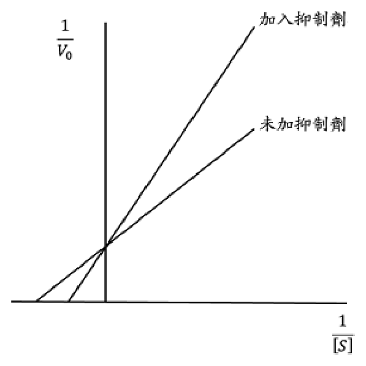

開卷有益 ／
醫師 ／ 醫學（一）（包括生物化學、解剖學、胚胎及發育生物學、組織學、生理學等科目知識及其臨床之應用） ／ 110 年第 1 次110 年第 1 次醫師醫學（一）（包括生物化學、解剖學、胚胎及發育生物學、組織學、生理學等科目知識及其臨床之應用）試題與答案
這一頁是民國 110 年第 1 次醫師醫學（一）（包括生物化學、解剖學、胚胎及發育生物學、組織學、生理學等科目知識及其臨床之應用）的整份歷屆試題，共 100 題，題目與標準答案出自考選部「國家考試試題及測驗式試題答案」開放資料，其中 100 題附有詳解。以下逐題列出題幹、選項與答案；要計時作答或記錄成績，請用線上練習。
考選部原始場次代碼：110020
線上作答這一科 →
全部 100 題
第 1 題
右邊延腦內側因梗塞性中風而損傷，造成內側延腦症候群（medial medullary syndrome），下列何者最可能出現？
（A） 左側舌頭肌肉運動無力（B） 右側上肢出現intentional tremor（C） 兩側眼球無法看向左側（D） 對側肢體無力，同時同側舌頭肌肉無力答案：（D）
詳解與考點 正解：右側內側延腦梗塞同時傷及錐體束與舌下神經。錐體束在延腦下端交叉，故造成左側肢體無力；舌下神經損傷造成右側舌肌無力，合為對側肢體與同側舌肌無力，故選 D。
A：右側病灶造成右側、非左側舌肌無力。
B：intention tremor 指向小腦或其連結，不是內側延腦症候群的核心表現。
C：雙眼向左凝視障礙需腦橋水平凝視中樞受損，不能由單側內側延腦病灶解釋。
本題考點：內側延腦症候群（medial medullary syndrome）涉及錐體束（corticospinal tract）、內側丘系（medial lemniscus）與舌下神經（hypoglossal nerve）；長束徵象多在對側，舌肌無力在同側。
第 2 題
有關齒狀韌帶（denticulate ligament）的敘述，下列何者正確？
（A） 由硬腦膜所形成（B） 附著於尾骨內側面（C） 位於脊髓背根與腹根之間（D） 一般有32對答案：（C）
詳解與考點 正解：齒狀韌帶固定脊髓時的解剖位置。齒狀韌帶是軟腦膜（pia mater）的側方鋸齒狀延伸，穿過蛛網膜下腔附著至硬腦膜，位於脊髓背根與腹根之間，故選 C。
A：它源自軟腦膜，並非由硬腦膜形成；硬腦膜是其外側附著處。
B：齒狀韌帶固定的是脊髓與硬腦膜，並不附著於尾骨內側面。
D：成人通常有約 21 對齒狀韌帶，非 32 對。
本題考點：齒狀韌帶（denticulate ligament）是軟腦膜（pia mater）延伸；位於背根與腹根之間；其功能是將脊髓側方固定於硬腦膜。
第 3 題
下甲狀腺靜脈（inferior thyroid vein）通常回流到：
（A） 內頸靜脈（internal jugular vein）（B） 外頸靜脈（external jugular vein）（C） 頭臂靜脈（brachiocephalic vein）（D） 鎖骨下靜脈（subclavian vein）答案：（C）
詳解與考點 正解：下甲狀腺靜脈的回流終點。下甲狀腺靜脈在甲狀腺下極形成靜脈叢，通常匯入左或右頭臂靜脈（brachiocephalic vein），故選 C。
A：上甲狀腺靜脈多回流至內頸靜脈，容易與下甲狀腺靜脈混淆。
B：外頸靜脈不是下甲狀腺靜脈的通常回流處。
D：鎖骨下靜脈雖與頭臂靜脈相連，但不是此靜脈的典型直接終點。
本題考點：甲狀腺靜脈回流（thyroid venous drainage）中，上與中甲狀腺靜脈多入內頸靜脈；下甲狀腺靜脈多入頭臂靜脈（brachiocephalic vein）。
第 4 題
下列何者的收縮，與眼球的旋轉（rotation）無關？
（A） 上直肌（superior rectus muscle）（B） 上斜肌（superior oblique muscle）（C） 內直肌（medial rectus muscle）（D） 下斜肌（inferior oblique muscle）答案：（C）
詳解與考點 正解：眼球旋轉即內旋或外旋（torsion）。內直肌（medial rectus muscle）的主要作用為內收，拉力方向不造成旋轉，故選 C。
A：上直肌除上轉外，也造成內收與內旋，與旋轉有關。
B：上斜肌除下轉與外展外，也造成內旋，故與旋轉有關。
D：下斜肌除上轉與外展外，也造成外旋，故與旋轉有關。
本題考點：眼外肌（extraocular muscles）中，內直肌主司內收；上直肌與上斜肌造成內旋；下斜肌造成外旋（extorsion）。
第 5 題
下列何者傳遞角膜（cornea）的一般感覺？
（A） 鼻睫神經（nasociliary nerve）（B） 額神經（frontal nerve）（C） 眶上神經（supraorbital nerve）（D） 動眼神經（oculomotor nerve）答案：（A）
詳解與考點 正解：角膜的一般感覺傳入。角膜感覺由三叉神經眼支（ophthalmic division, V1）經鼻睫神經（nasociliary nerve）的長睫神經傳遞，故選 A。
B：額神經也是 V1 分支，但主要分布於額部、上眼瞼與頭皮，非角膜感覺主徑。
C：眶上神經是額神經分支，支配前額與頭皮感覺，不負責角膜。
D：動眼神經是運動與副交感神經，支配多條眼外肌及瞳孔縮小，並非一般感覺神經。
本題考點：角膜反射（corneal reflex）的傳入支是三叉神經眼支（V1），主要經鼻睫神經（nasociliary nerve）；動眼神經（oculomotor nerve）不傳遞角膜一般感覺。
第 6 題
下列何者的血液，最不可能進入上矢狀竇（superior sagittal sinus）？
（A） 眼眶（orbit）（B） 額竇（frontal sinus）（C） 鼻腔（nasal cavity）（D） 顱骨膜（pericranium）答案：（A）
詳解與考點 正解：上矢狀竇（superior sagittal sinus）的交通靜脈來源。額竇、鼻腔與顱骨膜可經導血管或靜脈交通與硬腦膜靜脈竇相通；眼眶的主要靜脈回流則經眼靜脈至海綿竇，最不可能進入上矢狀竇，故選 A。
B：額竇可經與上矢狀竇相通的靜脈引流，故不是最不可能者。
C：鼻腔靜脈可經導血管與硬腦膜靜脈竇交通，具有入顱內的可能性。
D：顱骨膜靜脈可經導血管與上矢狀竇交通，是其典型聯繫之一。
本題考點：硬腦膜靜脈竇（dural venous sinuses）可經導血管（emissary veins）與顱外靜脈交通；眼眶靜脈主要通往海綿竇（cavernous sinus）。
第 7 題
成年男性站立時，右側肺臟的水平裂（horizontal fissure）在前方約位於下列那個肋骨附近？
（A） 第2（B） 第4（C） 第6（D） 第8答案：（B）
詳解與考點 正解：右肺水平裂在胸壁的前方體表定位。右肺水平裂自腋中線附近的第5肋向前行，於胸骨旁約達第4肋軟骨，因此前方約位於第4肋，故選 B。
A：第2肋位置過高，較接近肺尖以下的上胸部，非水平裂前端。
C：第6肋是斜裂在鎖骨中線附近的重要體表標誌，容易與水平裂混淆。
D：第8肋位置更低，遠離右肺水平裂的前方走向。
本題考點：右肺裂（pulmonary fissures）中，水平裂（horizontal fissure）前方約在第4肋；斜裂（oblique fissure）前方較低、約至第6肋。
第 8 題
乳糜池（cisterna chyli）約在下列那個椎骨的高度？
（A） T12（B） L2（C） L5（D） S1答案：（B）
詳解與考點 正解：乳糜池（cisterna chyli）所在的上腹部後腹膜高度。乳糜池通常位於腹主動脈右側、橫膈腳之下，約在 L1 至 L2 椎體高度；選項中以 L2 最符合，故選 B。
A：T12 較接近橫膈與主動脈裂孔高度，不是乳糜池的典型位置。
C：L5 位於骨盆入口附近，明顯低於乳糜池常見位置。
D：S1 更位於骨盆腔範圍，與後腹膜上腹部的乳糜池不符。
本題考點：乳糜池（cisterna chyli）是胸導管（thoracic duct）的下端擴張，收集腸幹與腰淋巴幹；位置約在 L1-L2 高度、腹主動脈右側。
第 9 題
下列何者不位於坐骨肛門窩（ischioanal fossa）的外側？
（A） 提肛肌（levator ani muscle）（B） 陰部管（pudendal canal）（C） 陰部神經（pudendal nerve）（D） 閉孔內肌（obturator internus muscle）答案：（A）
詳解與考點 正解：坐骨肛門窩（ischioanal fossa）的外側壁。其外側壁由閉孔內肌（obturator internus）及其筋膜構成，筋膜上的陰部管含陰部神經；提肛肌位於窩的上內側，並非外側，故選 A。
B：陰部管在閉孔內筋膜內的外側壁上，故位於外側。
C：陰部神經走行於陰部管內，因而也在窩的外側。
D：閉孔內肌本身構成坐骨肛門窩的外側壁，敘述正確。
本題考點：坐骨肛門窩（ischioanal fossa）的外側壁為閉孔內肌（obturator internus）與閉孔內筋膜；陰部管（pudendal canal）內含陰部神經（pudendal nerve）；提肛肌構成上內側界。
第 10 題
支配閉孔內肌（obturator internus）的神經損傷時，下列何者的功能最可能同時受影響？
（A） 內收長肌（adductor longus）（B） 提肛肌（levator ani）（C） 下孖肌（inferior gemellus）（D） 上孖肌（superior gemellus）答案：（D）
詳解與考點 正解：與閉孔內肌共用同一神經支配的肌肉。閉孔內肌由 nerve to obturator internus 支配；此神經亦支配上孖肌（superior gemellus），因此受損時兩者功能最可能同時受影響，故選 D。
A：內收長肌由閉孔神經支配，與 nerve to obturator internus 不同。
B：提肛肌主要由神經至提肛肌等支配，並非同一條神經。
C：下孖肌由 nerve to quadratus femoris 支配，看似同為深層外旋肌，卻非閉孔內肌的共同神經。
本題考點：nerve to obturator internus 支配閉孔內肌（obturator internus）與上孖肌（superior gemellus）；nerve to quadratus femoris 支配下孖肌（inferior gemellus）與股方肌。
第 11 題
在男性，下列何者經常經由直腸進行觸診？
（A） 膀胱（B） 前列腺（C） 輸尿管（D） 輸精管答案：（B）
詳解與考點 正解：男性直腸指診（digital rectal examination）可觸及的前方器官。前列腺（prostate）位於直腸前方、膀胱下方，經直腸前壁可直接評估其大小、表面與壓痛，故選 B。
A：膀胱位置較高且隔著前列腺等構造，通常不是經直腸可常規直接觸診的目標。
C：輸尿管走行較深且細小，無法作為一般直腸指診的常規觸診構造。
D：輸精管可在陰囊或精索相關部位辨識，但不是男性直腸指診最常觸及的構造。
本題考點：男性骨盆直腸指診（digital rectal examination）可觸及前列腺（prostate）；前列腺位於膀胱下方與直腸前方，是臨床檢查的重要標的。
第 12 題
股動脈（femoral artery）穿過下列何者後進入膕窩（popliteal fossa）成為膕動脈（popliteal artery）？
（A） 閉孔外肌（obturator externus）（B） 股四頭肌（quadriceps femoris）（C） 內收長肌（adductor longus）（D） 內收大肌（adductor magnus）答案：（D）
詳解與考點 正解：股動脈進入膕窩後改名為膕動脈；它先經內收管，接著穿過內收大肌遠端的內收肌腱裂孔（adductor hiatus），故選 D。內收肌腱裂孔是連接大腿前內側區與膕窩的重要解剖通道。
A：閉孔外肌位於髖關節深層，主要協助大腿外旋，並不是股動脈通往膕窩所穿越的構造。
B：股四頭肌位於大腿前方，是膝伸肌群；股動脈雖行經大腿前內側，並不穿越此肌進入膕窩。
C：內收長肌構成股三角與內收管的部分邊界，容易讓人聯想到股動脈的走向；但真正讓血管離開內收管、進入膕窩的是（D）內收大肌的裂孔。
本題考點：股動脈（femoral artery）在內收肌腱裂孔（adductor hiatus）後續稱膕動脈（popliteal artery）；內收管（adductor canal）是其進入膕窩前的通道。
第 13 題
下列那一條神經支配棘下肌（infraspinatus muscle）？
（A） 肩胛上神經（suprascapular nerve）（B） 上肩胛下神經（superior subscapular nerve）（C） 下肩胛下神經（inferior subscapular nerve）（D） 肩胛背神經（dorsal scapular nerve）答案：（A）
詳解與考點 正解：棘下肌是旋轉肌袖的一員，負責肩關節外旋，受肩胛上神經（suprascapular nerve）支配；該神經也支配棘上肌，故選 A。
B：上肩胛下神經支配肩胛下肌上部，不支配位於肩胛骨後面的棘下肌。
C：下肩胛下神經支配肩胛下肌下部及大圓肌，兩者皆不是棘下肌。
D：肩胛背神經主要支配提肩胛肌與菱形肌，功能偏向肩胛骨的固定與內收，非旋轉肌袖支配神經。
本題考點：肩胛上神經（suprascapular nerve）支配棘上肌與棘下肌；旋轉肌袖（rotator cuff）包含 supraspinatus、infraspinatus、teres minor 與 subscapularis。
第 14 題
下列何構造可接受光線刺激，調節人體晝夜節律？
（A） 丘腦下核（subthalamus）（B） 視交叉上核（suprachiasmatic nucleus）（C） 藍斑核（locus ceruleus）（D） 丘腦枕部（pulvinar of thalamus）答案：（B）
詳解與考點 正解：題幹的關鍵是「接受光線刺激」並調節晝夜節律。視網膜的光訊號經視網膜下視丘徑傳至下視丘的視交叉上核（suprachiasmatic nucleus, SCN），SCN 是人體主要生理時鐘，故選 B。
A：丘腦下核是基底核迴路的一部分，與運動調控密切相關，並非晝夜節律的中央時鐘。
C：藍斑核是去甲腎上腺素能核團，參與覺醒、注意力與壓力反應；它可受睡醒狀態影響，但不是直接以光線校準節律的主要構造。
D：丘腦枕部與視覺注意及感覺資訊整合有關，不能取代（B）視交叉上核的節律同步功能。
本題考點：視交叉上核（suprachiasmatic nucleus, SCN）是晝夜節律（circadian rhythm）的主要節律產生器；視網膜下視丘徑（retinohypothalamic tract）提供光照同步訊號。
第 15 題
關於脊髓的敘述，下列何者錯誤？
（A） 下運動神經元（lower motor neuron）之細胞本體位於腹角（ventral horn）（B） nucleus dorsalis of Clarke可發出脊髓小腦徑（spinocerebellar tract）（C） 背角（dorsal horn）之中間神經元（interneuron）可參與痛覺調控（D） 背角感覺神經元（dorsal horn sensory neuron）發出之神經纖維主要形成背柱（dorsal column）答案：（D）
詳解與考點 正解：本題問錯誤敘述。背柱（dorsal column）主要由背根神經節初級感覺神經元的中樞突構成，傳遞精細觸覺、本體覺與震動覺；不是由背角感覺神經元發出的纖維主要形成，故錯誤的是 D。
A：下運動神經元的細胞本體位於脊髓腹角，軸突經腹根支配骨骼肌，敘述正確。
B：Clarke 胸核（nucleus dorsalis of Clarke）的神經元可形成後脊髓小腦徑，將下肢與軀幹的無意識本體覺傳往小腦，敘述正確。
C：背角內的中間神經元參與閘門控制及下行抑制等痛覺調控，敘述正確。
本題考點：背柱－內側丘系（dorsal column-medial lemniscus pathway）的第一級神經元位於背根神經節；脊髓背角（dorsal horn）是感覺訊息與痛覺調控的重要突觸區。
第 16 題
下列何者為痛覺調控之重要構造？
（A） 導水管周圍灰質（periaqueductal gray）（B） 內側縱束（medial longitudinal fasciculus）（C） 橋腦旁正中網狀結構（paramedian pontine reticular formation）（D） 下橄欖核（inferior olivary nucleus）答案：（A）
詳解與考點 正解：導水管周圍灰質（periaqueductal gray, PAG）是中腦下行性痛覺抑制系統的樞紐，可經延腦相關核團影響脊髓背角的傷害性訊號傳遞，故選 A。
B：內側縱束主要協調眼球運動核與前庭核，使雙眼共同轉動，並非痛覺調控核心。
C：橋腦旁正中網狀結構與水平凝視的眼動控制有關，名稱容易因位於腦幹而造成混淆，但不是經典的下行止痛中樞。
D：下橄欖核提供小腦攀緣纖維輸入，與動作學習及協調較相關。
本題考點：導水管周圍灰質（periaqueductal gray, PAG）啟動下行性疼痛調控（descending pain modulation）；脊髓背角（dorsal horn）是疼痛訊號受抑制與整合的部位。
第 17 題
關於Edinger-Westphal nucleus之敘述，下列何者錯誤？
（A） 其發出之神經纖維可併行入動眼神經（oculomotor nerve）（B） 含有副交感神經節前神經元（parasympathetic preganglionic fiber）（C） 參與光反射（light reflex）（D） 支配淚腺（lacrimal gland）的分泌答案：（D）
詳解與考點 正解：本題問錯誤敘述。Edinger-Westphal nucleus 的副交感節前纖維隨動眼神經到睫狀神經節，支配瞳孔括約肌與睫狀肌；淚腺分泌主要由顏面神經的副交感路徑支配，因此錯誤的是 D。
A：Edinger-Westphal nucleus 的節前副交感纖維確實隨動眼神經行進，敘述正確。
B：此核含有副交感節前神經元的細胞本體；選項雖稱 fiber，所指的副交感節前路徑正確。
C：光反射的傳出路徑由 Edinger-Westphal nucleus 經動眼神經抵達瞳孔括約肌，敘述正確。
本題考點：Edinger-Westphal nucleus 是動眼神經副交感核（oculomotor parasympathetic nucleus）；瞳孔光反射（pupillary light reflex）經睫狀神經節（ciliary ganglion）控制瞳孔括約肌。
第 18 題
關於大腦皮質之布洛卡區（Broca's area）的敘述，下列何者錯誤？
（A） 位於 Brodmann areas 44, 45（B） 損傷後會產生運動型失語症（motor aphasia）（C） 位於顳上迴（superior temporal gyrus）（D） 大部分人位於左側大腦半球答案：（C）
詳解與考點 正解：本題問錯誤敘述。布洛卡區位於優勢半球額下迴的 Brodmann areas 44、45，而非顳上迴；顳上迴後部是韋尼克區的典型位置，故錯誤的是 C。
A：布洛卡區對應 Brodmann areas 44、45，敘述正確。
B：布洛卡區受損典型造成非流暢性的運動型失語症，理解相對保留而言語產出受損，敘述正確。
D：多數人的語言優勢半球在左側，因此布洛卡區通常位於左半球，敘述正確。
本題考點：布洛卡區（Broca's area）位於優勢半球額下迴，負責語言產出；韋尼克區（Wernicke's area）位於顳上迴後部，主要關係語言理解。
第 19 題
供應鼻腔的動脈中，下列何者間接源自內頸動脈（internal carotid artery）？
（A） 蝶腭動脈（sphenopalatine artery）（B） 大腭動脈（greater palatine artery）（C） 外側鼻動脈（lateral nasal artery）（D） 前篩動脈（anterior ethmoidal artery）答案：（D）
詳解與考點 正解：前篩動脈是眼動脈的分支，而眼動脈源自內頸動脈，故前篩動脈是間接源自內頸動脈的鼻腔供血動脈，選 D。
A：蝶腭動脈是上頜動脈的分支，屬外頸動脈系統。
B：大腭動脈亦來自上頜動脈系統，與（A）一樣屬外頸動脈來源。
C：外側鼻動脈通常為顏面動脈分支，顏面動脈來自外頸動脈，並非內頸動脈系統。
本題考點：鼻腔供血同時來自內頸動脈與外頸動脈系統；前篩動脈（anterior ethmoidal artery）經眼動脈（ophthalmic artery）源自內頸動脈（internal carotid artery）。
第 20 題
下列何者收縮，有助於下頜骨的下壓（depression of mandible）？
（A） 顳肌（temporalis muscle）（B） 翼內肌（medial pterygoid muscle）（C） 咬肌（masseter muscle）（D） 二腹肌（digastric muscle）答案：（D）
詳解與考點 正解：下頜骨下壓即張口。二腹肌（digastric muscle）在舌骨固定時可向下牽拉下頜骨，協助張口，故選 D。
A、B、C：顳肌、翼內肌與咬肌皆屬主要咀嚼肌，主要作用是上提下頜骨以閉口；其中翼內肌也可協助前突與側方運動，但都不是下壓下頜骨的主力。它們因同樣有助閉口而不符題意。
本題考點：下頜骨下壓（depression of mandible）由二腹肌（digastric muscle）等舌骨上肌群協助；咀嚼肌（muscles of mastication）主要負責下頜骨上提與閉口。
第 21 題
下列何者與心包膜（pericardium）的神經支配較無關聯？
（A） 迷走神經（vagus nerve）（B） 膈神經（phrenic nerve）（C） 交感神經幹（sympathetic trunk）（D） 肋間神經（intercostal nerve）答案：（D）
詳解與考點 正解：本題問與心包膜神經支配較無關聯者。纖維性心包膜與壁層漿膜心包主要由膈神經傳遞感覺，並可有交感與迷走神經相關自主神經纖維；肋間神經並非心包膜的典型神經支配，故選 D。
A：迷走神經可提供與心包膜相關的自主神經纖維，故不能說較無關聯。
B：膈神經是心包膜感覺支配的關鍵神經，心包炎疼痛可轉移至肩部正反映其重要性。
C：交感神經幹參與心臟與心包膜的自主神經網絡，與該區並非無關。
本題考點：心包膜（pericardium）的體感覺主要經膈神經（phrenic nerve）傳遞；心包膜疼痛可轉移至同為 C3–C5 節段的肩部區域。
第 22 題
有關胸膜腔（pleural cavity）之敘述，下列何者正確？
（A） 左右胸膜腔相通（B） 向上延伸到頸部（C） 其內充滿新鮮空氣（D） 肺臟位於胸膜腔內答案：（B）
詳解與考點 正解：胸膜腔的穹隆高出第一肋並延伸至頸根部，因此「向上延伸到頸部」正確，故選 B。胸膜腔是壁層與臟層胸膜間的潛在腔隙，正常僅含少量潤滑液。
A：左右胸膜腔彼此分隔，正常不相通；若相通，單側氣胸便容易同時影響兩肺。
C：正常胸膜腔不充滿新鮮空氣；空氣進入胸膜腔是氣胸的病理狀態。
D：肺臟表面由臟層胸膜包覆，肺並非「位於胸膜腔內」；胸膜腔只是兩層胸膜間的薄隙，這是最常見的語意誘答。
本題考點：胸膜腔（pleural cavity）是潛在腔（potential space），含少量漿液；胸膜穹隆（cervical pleura）延伸至頸根部。
第 23 題
有關奇靜脈（azygos vein）之敘述，下列何者錯誤？
（A） 匯入上腔靜脈（superior vena cava）（B） 總髂靜脈（common iliac vein）血可經腰靜脈（lumbar vein）匯入奇靜脈（C） 大部分右側肋間靜脈血透過半奇靜脈（hemiazygos vein）匯入奇靜脈（D） 左上肋間靜脈（left superior intercostal vein）不會匯入奇靜脈答案：（C）
詳解與考點 正解：本題問錯誤敘述。大部分右側後肋間靜脈直接流入奇靜脈；半奇靜脈主要承接左側下後肋間靜脈後跨越至右側奇靜脈，因此（C）把右側大部分肋間靜脈誤說經半奇靜脈匯流，故選 C。
A：奇靜脈在右肺根上方形成弓後匯入上腔靜脈，敘述正確。
B：下腔靜脈系統可經升腰靜脈與腰靜脈等側枝連通奇靜脈系統，故此敘述正確。
D：左上肋間靜脈通常流入左頭臂靜脈，而非直接匯入奇靜脈，敘述正確。
本題考點：奇靜脈系統（azygos venous system）是上、下腔靜脈間的重要側枝循環；半奇靜脈（hemiazygos vein）主要引流左側下胸壁靜脈血。
第 24 題
有關胸廓（thoracic cage）之敘述，下列何者錯誤？
（A） 保護重要臟器（B） 提供上肢肌肉附著點（C） 抵抗呼吸時肺部所產生負壓（D） 活動度低、不易變形答案：（D）
詳解與考點 正解：本題問錯誤敘述。胸廓由肋骨、胸椎、胸骨與肋軟骨構成，必須隨呼吸改變容積，具有彈性與可動性；說它活動度低且不易變形不正確，故選 D。
A：胸廓可保護心、肺與大血管等重要胸腔臟器，敘述正確。
B：肩帶與上肢相關肌群有多處附著於胸廓，例如胸大肌、前鋸肌與部分背肌，敘述正確。
C：胸廓的骨性與軟骨性結構有助維持胸壁穩定、抵抗吸氣時胸腔負壓造成的內陷，敘述正確。
本題考點：胸廓（thoracic cage）的功能包括保護胸腔臟器、提供肌肉附著與支持呼吸運動；肋軟骨（costal cartilage）賦予胸壁彈性。
第 25 題
心臟之靜脈（cardiac veins）主要匯流至：
（A） 冠狀竇（coronary sinus）（B） 左心房（left antrium）（C） 右心室（right ventricle）（D） 上腔靜脈（superior vena cava）答案：（A）
詳解與考點 正解：心臟的大部分靜脈血由大心靜脈、中間心靜脈與小心靜脈等匯入冠狀竇（coronary sinus），再開口至右心房，故主要匯流處是 A。
B：冠狀竇開口於右心房而非左心房；少量最小心靜脈可直接開口至各心腔，但不改變主要回流路徑。
C：右心室不是心臟靜脈的主要匯流處，將冠狀竇的開口位置誤置於心室。
D：上腔靜脈回收頭頸、上肢與上胸部的靜脈血，不是心肌靜脈血的主要回流管道。
本題考點：冠狀竇（coronary sinus）是心臟靜脈（cardiac veins）的主要匯流處，並開口於右心房（right atrium）。
第 26 題
有關橫膈（diaphragm）的敘述，下列何者錯誤？
（A） 下腔靜脈通過腔靜脈孔（caval opening）（B） 橫膈右腳（right crus）形成食道裂孔（esophageal hiatus）（C） 主動脈通過內側弓（medial arcuate arch）（D） 腹壁上血管（superior epigastric vessels）通過胸肋三角（sternocostal triangle）答案：（C）
詳解與考點 正解：本題問錯誤敘述。主動脈穿越橫膈的位置是位於兩腳後方的主動脈裂孔（aortic hiatus），不是內側弓狀韌帶，故錯誤的是 C。
A：下腔靜脈通過腔靜脈孔，位於橫膈中央腱內，敘述正確。
B：食道裂孔主要由橫膈右腳的肌束形成，敘述正確。
D：腹壁上血管可經胸肋三角進入腹壁，此處也是橫膈較薄弱的區域，敘述正確。
本題考點：橫膈（diaphragm）的三大通道為腔靜脈孔（caval opening）、食道裂孔（esophageal hiatus）與主動脈裂孔（aortic hiatus）；內側弓狀韌帶（medial arcuate ligament）跨越腰大肌。
第 27 題
王老先生接受手術摘除前列腺時，外科醫師應避免傷害下列何者，以免將來出現陰莖勃起問題？
（A） 陰部神經（pudendal nerve）（B） 陰莖背神經（dorsal nerve of the penis）（C） 腹下神經（hypogastric nerve）（D） 骨盆內臟神經（pelvic splanchnic nerve）答案：（D）
詳解與考點 正解：陰莖勃起主要由骨盆內臟神經（pelvic splanchnic nerves）的副交感纖維經骨盆神經叢與海綿體神經促進血管擴張。前列腺手術須保留前列腺旁的神經血管束，因此選 D。
A：陰部神經主要負責會陰與外生殖器的體感覺及部分骨骼肌運動，並非引發勃起血管反應的主要副交感來源。
B：陰莖背神經是陰部神經分支，主要傳遞陰莖感覺；它對性反應感覺很重要，但不是題目所問手術後勃起功能的自主神經關鍵。
C：腹下神經攜帶以交感為主的纖維，與射精等功能相關；勃起的主要血管舒張驅動則是（D）骨盆內臟神經。
本題考點：骨盆內臟神經（pelvic splanchnic nerves）提供勃起（erection）的副交感支配；海綿體神經（cavernous nerves）位於前列腺附近，手術時應注意保留。
第 28 題
胚胎時期的引帶（gubernaculum），在女性將退化形成何構造？
（A） 卵巢懸韌帶（suspensory ligament of ovary）（B） 子宮圓韌帶（round ligament of uterus）（C） 內側臍韌帶（medial umbilical ligament）（D） 主韌帶（cardinal ligament）答案：（B）
詳解與考點 正解：女性胚胎的引帶（gubernaculum）因子宮發育而分成兩段：卵巢至子宮的一段成為卵巢固有韌帶，子宮至大陰唇的一段成為子宮圓韌帶，故選 B。
A：卵巢懸韌帶含卵巢血管並由較上方的腹膜皺襞形成，不是引帶的遺跡。
C：內側臍韌帶是閉鎖臍動脈的遺跡，來源與生殖腺下降無關。
D：主韌帶是子宮頸側方的結締組織支持構造，並非胚胎引帶退化而成。
本題考點：引帶（gubernaculum）在女性形成卵巢固有韌帶（ovarian ligament）與子宮圓韌帶（round ligament of uterus）；在男性則與睪丸下降有關。
第 29 題
腰大肌（psoas major）與髂肌（iliacus）的肌腱合併後附著於股骨（femur）的那一個突起上？
（A） 粗線（linea aspera）（B） 恥骨線（pectineal line）（C） 小轉子（lesser trochanter）（D） 大轉子（greater trochanter）答案：（C）
詳解與考點 正解：腰大肌與髂肌共同形成髂腰肌（iliopsoas），其共同肌腱跨過髖關節前方後附著於股骨小轉子（lesser trochanter），故選 C。這也使它成為強力的髖關節屈肌。
A：粗線位於股骨後面，是多條內收肌與股肌附著處，不是髂腰肌終止點。
B：恥骨線位於股骨近端後內側，是恥骨肌等附著處，並非腰大肌與髂肌共同肌腱的附著點。
D：大轉子主要與臀中肌、臀小肌及多條深層外旋肌相關；它位於近端股骨外側，易與（C）小轉子混淆，但髂腰肌附著於小轉子。
本題考點：髂腰肌（iliopsoas）由腰大肌（psoas major）與髂肌（iliacus）組成；小轉子（lesser trochanter）是其終止點，功能為髖關節屈曲。
第 30 題
下列何者的肌腱會與盂肱關節（glenohumeral joint）的關節盂唇（glenoid labrum）連結？
（A） 肱二頭肌長頭（long head of biceps brachii）（B） 肱二頭肌短頭（short head of biceps brachii）（C） 肱三頭肌長頭（long head of triceps brachii）（D） 肱三頭肌外側頭（lateral head of triceps brachii）答案：（A）
詳解與考點 正解：肱二頭肌長頭肌腱起自肩胛骨盂上結節，並與盂肱關節的關節盂唇，尤其上方盂唇，有連結，因此選 A。其肌腱在關節囊內行走後進入肱二頭肌溝。
B：肱二頭肌短頭起自喙突，不附著於關節盂唇。
C：肱三頭肌長頭起自盂下結節，雖同在肩胛骨關節盂附近，卻不與關節盂唇連結；這是因起點鄰近而容易混淆的誘答。
D：肱三頭肌外側頭起自肱骨後側，不跨越盂肱關節，也不會連結關節盂唇。
本題考點：肱二頭肌長頭（long head of biceps brachii）起自盂上結節（supraglenoid tubercle）並連結上方關節盂唇（superior glenoid labrum）；盂肱關節（glenohumeral joint）穩定性與盂唇密切相關。
第 31 題
背部中何者不向上附著到頭骨？
（A） 夾肌（splenius）（B） 半棘肌（semispinalis）（C） 髂肋肌（iliocostalis）（D） 最長肌（longissimus）答案：（C）
詳解與考點 正解：髂肋肌（iliocostalis）是豎脊肌最外側的一列，主要由髂骨與下位肋骨向上連至肋骨及頸椎橫突，並不附著到頭骨，故選 C。
A：夾肌包含頭夾肌，向上附著於乳突與上項線，與頭骨直接相連。
B：半棘肌中的頭半棘肌附著於枕骨，故此肌群可向上連至頭骨。
D：最長肌中的頭最長肌附著於乳突，雖肌群也有胸部與頸部部分，但不是完全不附著頭骨。
本題考點：豎脊肌（erector spinae）由髂肋肌（iliocostalis）、最長肌（longissimus）與棘肌（spinalis）組成；深背肌對頭部的附著須區分頭夾肌、頭半棘肌與頭最長肌。
第 32 題
肌原母細胞（myoblast）進入下列何者內，衍生形成橫膈雙腳（crura of diaphragm）？
（A） 外側體壁（lateral body wall）（B） 頸體節（cervical somite）（C） 橫中隔（septum transversum）（D） 食道背繫膜（dorsal mesentery of esophagus）答案：（D）
詳解與考點 正解：橫膈的後方肌性雙腳來源。肌原母細胞會遷入食道背繫膜（dorsal mesentery of esophagus），在此形成橫膈雙腳（crura of diaphragm）；雙腳環抱食道裂孔並固定於腰椎，故選 D。
A：外側體壁（lateral body wall）主要參與體壁與四肢相關構造的形成，並非橫膈雙腳的肌原母細胞移入處。
B：頸體節（cervical somite）提供遷移至橫膈的肌原母細胞來源，但題目問的是細胞進入何處後形成雙腳；其局部形成場所是（D）食道背繫膜，不能把來源誤當成目的地。
C：橫中隔（septum transversum）形成橫膈中央腱等成分，不是雙腳的主要來源。
本題考點：橫膈發育（development of diaphragm）由橫中隔、胸腹膜褶、食道背繫膜與體壁肌性成分共同形成；橫膈雙腳（crura of diaphragm）特別源於食道背繫膜。
第 33 題
從腹面觀（ventral view），中腸環（midgut loop）的旋轉方式為：
（A） 順時針方向作180度旋轉（B） 順時針方向作270度旋轉（C） 逆時針方向作180度旋轉（D） 逆時針方向作270度旋轉答案：（D）
詳解與考點 正解：由腹面觀察中腸環（midgut loop）的正常旋轉方向與總角度。中腸先在生理性臍疝時繞上腸繫膜動脈逆時針旋轉 90 度，回到腹腔後再逆時針旋轉 180 度；總計為逆時針 270 度，故選 D。
A：180 度少算了生理性臍疝期間的 90 度初始旋轉，而且方向也相反。
B：270 度的總角度正確，因而看似合理；但由腹面觀察的正常方向是逆時針，不是順時針。
C：方向正確，但只計入部分旋轉而少了 90 度，總角度應為 270 度。
本題考點：中腸旋轉（midgut rotation）以腸繫膜上動脈為軸，由腹面觀為逆時針 270 度；旋轉異常可造成腸扭轉或腸位置異常。
第 34 題
下列何項構造不是源自胚胎咽弓（pharyngeal arch）？
（A） 動脈導管（ductus arteriosus）（B） 主動脈弓（aortic arch）（C） 左側頸總動脈（left common carotid artery）（D） 升主動脈（ascending aorta）答案：（D）
詳解與考點 正解：咽弓動脈系統的衍生物。動脈導管、主動脈弓與左側頸總動脈都可追溯至咽弓動脈的重塑；升主動脈則主要由動脈幹形成，遠端並連續於主動脈囊，不是咽弓的衍生物，故選 D。
A：動脈導管（ductus arteriosus）為第六對咽弓動脈左側的衍生物，故不是答案。
B：主動脈弓（aortic arch）的主要部分源自左側第四對咽弓動脈，屬咽弓衍生物。
C：左側頸總動脈（left common carotid artery）源於第三對咽弓動脈，敘述符合咽弓動脈的命運。
本題考點：咽弓動脈（pharyngeal arch arteries）經選擇性保留與退化形成大血管；心臟流出道（outflow tract）則形成升主動脈與肺動脈幹。
第 35 題
下列何者源自體節之生骨節（sclerotome）的間質細胞？
（A） 脊椎骨（vertebra）（B） 髓核（nucleus pulposus）（C） 顱骨（cranium）（D） 四肢骨（appendicular skeleton）答案：（A）
詳解與考點 正解：體節（somite）的生骨節（sclerotome）命運。生骨節間質細胞向內、向中線遷移，圍繞脊索與神經管凝聚，形成脊椎骨（vertebra）及其相關軸骨骼，故選 A。
B：髓核（nucleus pulposus）源自殘留的脊索（notochord），不是生骨節。它位於椎間盤中央，常與生骨節形成的纖維環混淆。
C：顱骨（cranium）有神經嵴與旁中胚層等多重來源，不能視為軀幹體節生骨節的典型衍生物。
D：四肢骨（appendicular skeleton）主要由側板中胚層（lateral plate mesoderm）形成，不是體節生骨節。
本題考點：體節分化（somite differentiation）包括生骨節、肌節與皮節；生骨節（sclerotome）形成脊椎與肋骨等軸骨骼（axial skeleton）。
第 36 題
下列有關視神經（optic nerve）發育的敘述，何者正確？
（A） 在胎兒出生前，視神經的髓鞘形成（myelination）已完全發育（B） 視神經細胞是由大腦的皮質部衍生形成（C） 視神經髓鞘僅包圍至視神經盤（optic nerve disc）（D） 視神經源自神經嵴（neural crest）答案：（C）
詳解與考點 正解：視神經的髓鞘終止位置。視神經是中樞神經系統的延伸，其髓鞘由少突膠細胞形成，髓鞘延伸至視神經盤（optic nerve disc）即停止，因此正確的是 C。
A：視神經的髓鞘形成會在出生後持續進行，出生前並未完全成熟。
B：視神經纖維是視網膜神經節細胞的軸突，視網膜來自前腦的視杯；不能說由大腦皮質部直接衍生。
D：視神經源於神經外胚層（neuroectoderm），不是神經嵴（neural crest）；神經嵴則參與周邊神經等構造。
本題考點：視神經發育（optic nerve development）屬中樞神經系統（central nervous system）延伸；少突膠細胞（oligodendrocyte）形成髓鞘，髓鞘止於視神經盤。
第 37 題
下列上皮細胞間接合（intercellular junction）的構造，何者有中間絲（intermediate filament）參與？
（A） 緊密接合（tight junction）（B） 黏著小帶（zonula adherens）（C） 橋粒（desmosome）（D） 間隙接合（gap junction）答案：（C）
詳解與考點 正解：細胞接合連接哪一類細胞骨架。橋粒（desmosome）以 desmoplakin 等斑塊蛋白把細胞間的鈣黏蛋白連到角蛋白等中間絲（intermediate filament），提供抗拉力的機械性連結，故選 C。
A：緊密接合（tight junction）由 claudin、occludin 等封閉細胞旁路徑，主要與肌動蛋白網絡相連，並非中間絲接合。
B：黏著小帶（zonula adherens）透過 cadherin 與 catenin 連到肌動蛋白（actin）微絲；它同樣具有黏著功能，卻不是橋粒式的中間絲附著。
D：間隙接合（gap junction）由 connexon 構成細胞間離子與小分子通道，不是固定中間絲的構造。
本題考點：橋粒（desmosome）連接中間絲（intermediate filament）以抵抗張力；黏著小帶（zonula adherens）連接 actin；間隙接合（gap junction）負責細胞間通訊。
第 38 題
有關杯狀細胞（goblet cell）的敘述，下列何項正確？
（A） 是構成腺泡（acinus）的細胞（B） 屬於單細胞腺體（unicellular gland）（C） 屬於漿液分泌細胞（serous-secreting cell）（D） 通常分布於單層鱗狀（simple squamous）上皮細胞之間答案：（B）
詳解與考點 正解：杯狀細胞雖分泌黏液，卻是散在上皮中的單一分泌細胞。杯狀細胞（goblet cell）為單細胞腺體（unicellular gland），分泌黏蛋白形成保護與潤滑的黏液，故選 B。
A：腺泡（acinus）是由多個分泌細胞組成的腺體末端單位；杯狀細胞不組成腺泡。
C：杯狀細胞分泌的是黏液而非富含蛋白質的漿液，故不屬漿液分泌細胞。
D：杯狀細胞常見於呼吸道與腸道的柱狀上皮，非通常位於單層鱗狀上皮細胞之間。
本題考點：杯狀細胞（goblet cell）是單細胞腺體（unicellular gland）；黏液分泌（mucous secretion）與漿液分泌（serous secretion）的組成及上皮分布不同。
第 39 題
下列關於白血球（leukocyte）的敘述，何者正確？
（A） 顆粒性白血球（granulocyte）包括淋巴球（lymphocyte）、嗜酸性球（eosinophil）和嗜鹼性球（basophil）；無顆粒性白血球（agranulocyte）包括嗜中性白血球（neutrophil）和單核球（monocyte）（B） 含有嗜天青顆粒（azurophilic granule），此顆粒是溶酶體（lysosome）（C） 只有淋巴球（lymphocyte）能離開血管，進入結締組織（connective tissue）（D） 數量最多的是淋巴球（lymphocyte），最大的是嗜中性白血球（neutrophil）答案：（B）
詳解與考點 正解：白血球顆粒的性質。嗜天青顆粒（azurophilic granule）是白血球內的初級顆粒，實質上為含水解酶的溶酶體（lysosome），故選 B。
A：顆粒性白血球應包括嗜中性球、嗜酸性球與嗜鹼性球；淋巴球與單核球屬無顆粒性白血球，分類被對調。
C：多種白血球都可經由穿出作用（diapedesis）離開血管進入結締組織，並非只有淋巴球。
D：周邊血中數量最多的是嗜中性球，通常體積最大的是單核球；此選項兩項皆誤。
本題考點：白血球分類（leukocyte classification）分為顆粒性與無顆粒性白血球；嗜天青顆粒（azurophilic granules）是具消化功能的溶酶體。
第 40 題
有關角膜（cornea）的敘述，下列何者正確？
（A） 角膜上皮（corneal epithelium）由約5層非角質化複層扁平上皮細胞所組成，厚約 50μm（B） Bowman氏膜（Bowman's membrane）呈現過碘酸–雪夫氏（periodic acid-Schiff, PAS）反應，厚約 50μm（C） Descemet氏膜（Descemet's membrane）是一均質、微纖維的板層，厚約 40μm（D） 角膜基質（corneal stroma）由約30層薄板（thin lamellae）組成，每層含交錯的網狀微纖維束（reticularfibrils）答案：（A）
詳解與考點 正解：角膜各層的組織學特徵與厚度。角膜上皮（corneal epithelium）為約 5 層的非角質化複層扁平上皮，厚約 50 μm，符合選項 A，故選 A。
B：Bowman 氏膜是角膜上皮下的無細胞膠原層，厚度遠小於 50 μm；PAS 反應的描述也不能支持此厚度。
C：Descemet 氏膜是角膜內皮的基底膜，雖呈均質外觀，正常厚度並非約 40 μm；此數值使選項錯誤。
D：角膜基質確由規則排列的膠原薄板構成，但薄板數遠多於約 30 層，且其透明性仰賴平行規則的膠原纖維排列，非此處所述的網狀微纖維束。
本題考點：角膜分層（corneal layers）包括上皮、Bowman 氏膜、基質、Descemet 氏膜與內皮；角膜透明性（corneal transparency）依賴基質膠原薄板的規則排列。
第 41 題
下列何者是淋巴球（lymphocyte）在淋巴結（lymph node）中正確的循環路徑？①輸入淋巴管（afferentlymphatic vessel） ②輸出淋巴管（efferent lymphatic vessel） ③被膜下竇（subcapsular sinus） ④髓質竇（medullary sinus） ⑤小樑竇（trabecular sinus）
（A） ①⑤③④②（B） ①③⑤④②（C） ①④⑤③②（D） ①④③⑤②答案：（B）
詳解與考點 正解：淋巴自輸入端穿過淋巴結竇道的順序。淋巴先經①輸入淋巴管進入③被膜下竇，再流入⑤小樑竇，續至④髓質竇，最後由②輸出淋巴管離開；順序為①③⑤④②，故選 B。
A：小樑竇位於被膜下竇之後，不能在淋巴剛進入後先通過⑤再到③。
C：髓質竇是較末端的竇道，應在被膜下竇與小樑竇之後，不能排在前面。
D：此順序同樣把髓質竇錯置於被膜下竇之前，違反由周邊皮質流向髓質的路徑。
本題考點：淋巴結循環（lymph node circulation）為輸入淋巴管→被膜下竇→小樑竇→髓質竇→輸出淋巴管；竇道提供淋巴過濾與免疫細胞接觸的場所。
第 42 題
膽囊駱阿氏竇（Rokitansky-Aschoff sinuses）是：
（A） 漿液腺泡（serous acini）（B） 黏液腺泡（mucous acini）（C） 黏膜憩室（diverticula of mucosa）（D） 淋巴管（lymphatic vessels）答案：（C）
詳解與考點 正解：膽囊壁中的 Rokitansky-Aschoff sinuses 的形態。它是膽囊黏膜向肌層內陷形成的黏膜憩室（diverticula of mucosa），可見於慢性膽囊病變，故選 C。
A：漿液腺泡（serous acini）是腺體分泌末端，並非膽囊黏膜內陷的竇。
B：黏液腺泡（mucous acini）同樣是腺體單位；Rokitansky-Aschoff sinuses 保有膽囊黏膜的內陷輪廓，不是新生腺泡。
D：淋巴管（lymphatic vessels）有內皮襯裡且運送淋巴液，與黏膜侵入肌層形成的竇道不同。
本題考點：膽囊組織學（gallbladder histology）中，Rokitansky-Aschoff sinuses 是黏膜憩室（mucosal diverticula）；應與腺泡及淋巴管區別。
第 43 題
下列有關胃幽門部（pyloric stomach）的敘述，何項正確？
（A） 幽門腺是單泡狀腺（simple acinar gland）（B） 具有很淺的胃小凹（gastric pit），僅占胃黏膜（gastric mucosa）長度的十分之一（C） 具有顯著的粘膜肌層（muscularis mucosae）及增厚的環走肌外層（circular layer of muscularis externa）（D） 幽門腺主要是由許多壁細胞（parietal cell）及杯狀細胞（goblet cell）所組成答案：（C）
詳解與考點 正解：胃幽門部的肌層與腺體特徵。幽門部具有明顯的黏膜肌層（muscularis mucosae），且外肌層的環走肌（circular layer of muscularis externa）增厚，形成幽門括約肌，故選 C。
A：幽門腺為分枝、捲曲的管狀腺，並非單泡狀腺（simple acinar gland）。
B：幽門部的胃小凹很深，約占黏膜厚度的一半以上；「僅十分之一」較接近胃底與胃體的淺胃小凹，因而看似都是胃腺卻錯在部位。
D：幽門腺以分泌黏液的細胞及內分泌細胞為主，壁細胞少，亦不以杯狀細胞為主要成分。
本題考點：幽門胃（pyloric stomach）有深胃小凹（gastric pits）與黏液性幽門腺（pyloric glands）；環走肌增厚形成幽門括約肌（pyloric sphincter）。
第 44 題
手掌皮膚（palm skin）可見到下列何種構造？
（A） 毛囊（hair follicles）（B） 豎毛肌（arrector pili muscles）（C） 皮脂腺（sebaceous glands）（D） 汗腺（sweat glands）答案：（D）
詳解與考點 正解：手掌屬無毛皮膚（thick skin）。無毛皮膚沒有毛囊及其附屬的皮脂腺、豎毛肌，但保有豐富的汗腺（sweat glands）以利體溫調節與抓握表面濕潤，故選 D。
A：毛囊（hair follicles）不存在於手掌的無毛皮膚。
B：豎毛肌（arrector pili muscles）附著於毛囊；手掌沒有毛囊，因此也沒有豎毛肌。
C：皮脂腺（sebaceous glands）通常與毛囊相連，故手掌皮膚沒有皮脂腺。
本題考點：厚皮膚（thick skin）位於手掌與足底，具發達角質層與汗腺（sweat glands）；無毛皮膚（glabrous skin）缺乏毛囊、皮脂腺及豎毛肌。
第 45 題
腦下腺前葉（anterior lobe of pituitary gland）嗜酸性細胞（acidophil）內，呈嗜酸性的主要構造是：
（A） 分泌顆粒（secretory granule）（B） 高爾基氏體（Golgi apparatus）（C） 粗糙內質網（rough endoplasmic reticulum）（D） 中心粒（centriole）答案：（A）
詳解與考點 正解：腦下腺前葉嗜酸性細胞的染色基礎。嗜酸性細胞內大量儲存蛋白質性激素的分泌顆粒（secretory granules）會與酸性染料結合而呈嗜酸性，故選 A。
B：高爾基氏體（Golgi apparatus）主要負責修飾與包裝分泌物，通常不構成嗜酸性染色的主要來源。
C：粗糙內質網（rough endoplasmic reticulum）富含核糖體，傾向呈嗜鹼性；它參與蛋白質合成，卻與本題的嗜酸性外觀相反。
D：中心粒（centriole）是微管組織相關構造，數量少，不會決定細胞質主要的嗜酸性染色。
本題考點：腦下腺前葉（anterior pituitary）嗜酸性細胞（acidophil）的染色性主要反映分泌顆粒；粗糙內質網（rough endoplasmic reticulum）則常呈嗜鹼性。
第 46 題
睪丸縱隔（mediastinum testis）是由下列何者延伸並聚集增厚而成的？
（A） 皮膚（skin）（B） 鞘膜臟層（visceral layer of tunica vaginalis）（C） 鞘膜壁層（parietal layer of tunica vaginalis）（D） 白膜（tunica albuginea）答案：（D）
詳解與考點 正解：睪丸縱隔的被膜來源。白膜（tunica albuginea）在睪丸後緣向內延伸並聚集增厚，形成睪丸縱隔（mediastinum testis），其內有睪丸網，故選 D。
A：皮膚（skin）是陰囊最外層構造，與睪丸內部結締組織隔板及縱隔的形成無關。
B：鞘膜臟層（visceral layer of tunica vaginalis）覆蓋睪丸表面，並不向內增厚形成縱隔。
C：鞘膜壁層（parietal layer of tunica vaginalis）襯於陰囊腔壁側，更不是睪丸實質內縱隔的來源。
本題考點：白膜（tunica albuginea）是睪丸的緻密結締組織被膜；其後方增厚形成睪丸縱隔（mediastinum testis），並發出隔板分隔小葉。
第 47 題
下列何種狀況，細胞的平滑內質網（smooth endoplasmic reticulum）可釋出鈣離子？
（A） 平滑內質網的鈣離子幫浦（Ca2+ ATPase）活化時（B） 平滑內質網的IP3受器（inositol phosphate receptor）與IP3結合時（C） 細胞膜電位過極化（hyperpolarization）時（D） 細胞膜store-operated Ca2+ channel開啟時答案：（B）
詳解與考點 正解：內質網鈣庫的釋放閘門。IP3 與平滑內質網膜上的 IP3 受器（inositol trisphosphate receptor）結合時，受器通道開啟，使儲存於內質網腔的 Ca2+ 釋放至細胞質，故選 B。
A：Ca2+ ATPase 幫浦的作用是把細胞質 Ca2+ 泵回內質網腔，以補充鈣庫並降低細胞質鈣離子，不是釋放。
C：細胞膜過極化（hyperpolarization）改變膜電位，但不會直接開啟內質網的 IP3 受器。
D：store-operated Ca2+ channel 開啟時，鈣離子是由細胞外流入細胞質，用以補充鈣庫；它不是平滑內質網向細胞質釋鈣的途徑。
本題考點：IP3 訊號傳遞（IP3 signaling）藉由 IP3 receptor 釋放內質網 Ca2+；SERCA/Ca2+ ATPase 則將 Ca2+ 回收進內質網。
第 48 題
下列有關高張溶液（hypertonic solution）的敘述，何者正確？
（A） 若將紅血球置於此種溶液中，達成平衡時，細胞體積漲大（B） 該溶液滲透壓（osmotic pressure）低於血漿滲透壓（C） 該溶液所含之水分比例高於血漿（D） 其容積滲透濃度（osmolarity）高於300 mOsmol/L答案：（D）
詳解與考點 正解：高張溶液相對於血漿具有較高的有效滲透粒子濃度。血漿約為 300 mOsmol/L；高張溶液的容積滲透濃度（osmolarity）必高於此值，會使水由細胞內移向溶液，故選 D。
A：紅血球置於高張溶液時失水而皺縮，細胞體積變小，不會漲大。
B：高張溶液的滲透壓高於血漿，不是低於血漿。
C：高張代表相同容積中溶質比例較高、水分比例較低，與此敘述相反。
本題考點：張力（tonicity）決定跨細胞膜水分移動；高張溶液（hypertonic solution）具有較高 osmolarity，會使紅血球皺縮（crenation）。
第 49 題
交感神經興奮時，眼睛會產生下列何種反應？
（A） 使sphincter muscle of iris收縮，產生miosis（B） 使radial muscle of iris收縮，產生mydriasis（C） 使ciliary muscle收縮，有助於遠距離之視覺（D） 使ciliary muscle收縮，有助於近距離之視覺答案：（B）
詳解與考點 正解：交感神經對虹膜肌的作用。交感神經使虹膜的放射狀肌（radial muscle of iris）收縮，將瞳孔向外拉大，產生散瞳（mydriasis），故選 B。
A：虹膜括約肌（sphincter muscle of iris）收縮造成縮瞳（miosis），主要是副交感神經作用。
C：睫狀肌（ciliary muscle）收縮會降低懸韌帶張力、使水晶體變厚，這是近距離調節而非遠距離視覺。
D：睫狀肌收縮確有助近距離視覺，因而看似正確；但它是副交感神經支配，題目問的是交感神經興奮時的反應。
本題考點：自主神經眼部作用（autonomic control of the eye）中，交感神經使散瞳肌收縮；副交感神經使瞳孔括約肌與睫狀肌收縮。
第 50 題
體溫調節中樞位於何處？
（A） premotor cortex（B） cerebellum（C） amygdala（D） hypothalamus答案：（D）
詳解與考點 正解：整合體溫感受與效應反應的中樞位置。下視丘（hypothalamus）接收周邊與中樞溫度訊息，並調節出汗、皮膚血流、顫抖與產熱等反應，是體溫調節中樞，故選 D。
A：前運動皮質（premotor cortex）主要參與動作計畫與準備，不是恆定體溫的整合中樞。
B：小腦（cerebellum）主要協調姿勢、平衡與運動精細度，非體溫設定與調節部位。
C：杏仁核（amygdala）參與情緒與恐懼反應，雖可影響自主反應，卻不是主要體溫調節中樞。
本題考點：下視丘（hypothalamus）是恆定性（homeostasis）的重要整合中樞；體溫調節（thermoregulation）透過自主、內分泌與行為反應維持。
第 51 題
α-及γ-運動神經元同時興奮（co-activation）時，最主要的生理功能為下列何者？
（A） 避免在肌肉收縮時，喪失肌肉長度的訊息（B） 避免在肌肉收縮時，喪失肌肉張力的訊息（C） 避免在肌肉放鬆時，喪失肌肉長度的訊息（D） 避免在肌肉放鬆時，喪失肌肉張力的訊息答案：（A）
詳解與考點 正解：α、γ 運動神經元共同活化時對肌梭的作用。α 運動神經元使骨骼肌外梭肌纖維收縮；若沒有 γ 活化，肌梭會鬆弛而失去敏感度。γ 運動神經元同時使肌梭內肌纖維兩端收縮，維持中央感受區張力，使收縮期間仍能傳遞肌肉長度訊息，故選 A。
B：肌肉張力主要由高爾基腱器（Golgi tendon organ）偵測；α-γ 共活化的主要目的不是保存張力訊息。
C：肌肉放鬆時外梭肌纖維不會因 α 運動神經元收縮而鬆弛，因此不是本機制要避免的情境。
D：此選項同時把情境放在肌肉放鬆，並把主要感受資訊誤作張力；兩者都不符 α-γ 共活化的功能。
本題考點：α-γ 共活化（alpha-gamma co-activation）維持肌梭（muscle spindle）在肌肉收縮時的敏感度；肌梭偵測肌肉長度（muscle length），高爾基腱器偵測張力（muscle tension）。
第 52 題
訓練孩童捏陶土和剪紙等手部精細動作，最主要目的是為強化下列那一條神經路徑？
（A） brainstem pathway（B） dorsal column pathway（C） corticospinal tract（D） anterolateral spinothalamic tract答案：（C）
詳解與考點 正解：「捏陶土和剪紙等手部精細動作」；這類自主、分離而精準的遠端肢體運動，主要仰賴大腦皮質經皮質脊髓徑（corticospinal tract）下行控制脊髓運動神經元。尤其外側皮質脊髓徑對手指的精細隨意運動最重要，故選 C。
A：腦幹下行路徑（brainstem pathways）如前庭脊髓徑、網狀脊髓徑，主要調節姿勢、平衡與軀幹、近端肢體肌群活動，不是手部精細操作的主要路徑。
B：背柱路徑（dorsal column pathway）是傳入性感覺路徑，傳遞精細觸覺、振動覺與本體覺；精細動作雖需要感覺回饋，但它本身不負責將運動指令傳至肌肉。
D：前外側脊髓視丘徑（anterolateral spinothalamic tract）也是上行感覺路徑，主要傳遞痛覺、溫度覺與粗觸覺，非隨意運動的傳出通路。
本題考點：皮質脊髓徑（corticospinal tract）是隨意運動的主要下行路徑，特別負責手指等遠端肢體的精細動作；背柱內側丘系（dorsal column-medial lemniscus pathway）與前外側系統（anterolateral system）則屬上行感覺系統。
第 53 題
活化下列何種傳出神經元（efferent neuron）可誘發muscle spindle收縮？
（A） α-神經元（B） δ-神經元（C） β-神經元（D） γ-神經元答案：（D）
詳解與考點 正解：官方答案為 D。關鍵是誘發肌梭（muscle spindle）收縮。γ-運動神經元支配肌梭內肌纖維（intrafusal muscle fibers）；其活化會收縮肌梭兩端、拉緊中央感覺區，調整肌梭對肌長變化的敏感度，故選 D。
A：α-運動神經元支配梭外肌纖維（extrafusal muscle fibers），直接產生骨骼肌的力量與動作，並不直接使肌梭內肌纖維收縮。它看似也是運動神經元，但支配目標不同。
B：δ-神經元不是肌梭生理調節中標準的傳出運動神經元分類，不能作為誘發肌梭收縮的正確解釋。
C：β-運動神經元可同時支配梭內與梭外肌纖維，活化時也可能誘發梭內肌纖維收縮；若題意限定專一且典型的調控，才以 γ-運動神經元為主。
本題考點：肌梭（muscle spindle）偵測肌肉長度及其變化速率；γ-運動神經元（gamma motor neuron）支配梭內肌纖維，α-運動神經元（alpha motor neuron）支配梭外肌纖維。
第 54 題
比較同一種肌細胞的等長收縮（isometric twitch contraction）和等張收縮（isotonic twitch contraction），下列敘述何者正確？
（A） 等長收縮的延遲時間和完成一次收縮所需的時間皆比等張收縮短（B） 等長收縮的延遲時間和完成一次收縮所需的時間皆比等張收縮長（C） 等長收縮的延遲時間比等張收縮短，但完成一次收縮所需的時間比等張收縮長（D） 等長收縮的延遲時間比等張收縮長，但完成一次收縮所需的時間比等張收縮短答案：（C）
詳解與考點 正解：比較等長與等張單抽搐時，關鍵在等張收縮必須先發展足以克服負荷的張力，之後肌肉才開始縮短，因此其延遲時間較長。等長收縮不需進入負荷下的縮短期，等長張力反應持續較久；等張縮短的機械事件較短，故選 C。
A：此選項把完成一次收縮的時間方向判反。等長收縮的延遲時間確較短，但等長張力反應持續時間較等張縮短歷程長。
B：此選項稱兩項都較長，與等長收縮可立即發展張力、延遲時間較短不符。
D：此選項將兩個比較方向都顛倒；等張收縮才有克服負荷後才開始縮短所造成的較長延遲。
本題考點：等長收縮（isometric contraction）只改變張力、不改變肌長；等張收縮（isotonic contraction）在張力達到外加負荷後才縮短，因此具有較長的機械延遲與收縮歷程。
第 55 題
骨骼肌收縮所需要鈣離子之主要來源？
（A） 橫管（T-tube）（B） 粒線體（mitochondria）（C） 肌漿網（sarcoplasmic reticulum）（D） 細胞外液答案：（C）
詳解與考點 正解：骨骼肌興奮－收縮耦合（excitation-contraction coupling）的關鍵，是動作電位沿橫管傳入後活化肌漿網的鈣釋放通道，使肌漿網（sarcoplasmic reticulum）大量釋出 Ca2+ 至肌漿，Ca2+ 結合 troponin C 後啟動收縮。骨骼肌收縮所需 Ca2+ 的主要來源因此是肌漿網，故選 C。
A：橫管（T-tube）是細胞膜向內凹陷的結構，負責把去極化訊號帶入肌纖維深部；它是訊號傳遞位置，不是 Ca2+ 的主要儲存與供應處。
B：粒線體（mitochondria）可處理少量細胞內 Ca2+，主要功能則是產生 ATP，並非骨骼肌單次收縮時大量 Ca2+ 的主要來源。
D：細胞外液 Ca2+ 對骨骼肌收縮並非主要直接來源；這點容易與心肌混淆，心肌收縮較依賴細胞外 Ca2+ 內流觸發鈣誘發鈣釋放。
本題考點：骨骼肌興奮－收縮耦合（excitation-contraction coupling）由橫管（T-tubule）傳導動作電位，肌漿網（sarcoplasmic reticulum）釋放 Ca2+；Ca2+ 與 troponin C 結合後允許肌動蛋白－肌凝蛋白交互作用。
第 56 題
血小板（platelet）會透過下列那種反應貼附於破損的血管壁上，促使止血反應的進行？
（A） 活化凝血因子（clotting factor）XI、VIII、V形成intrinsic pathway之正回饋機制（B） 釋放tissue factor與凝血因子（clotting factor）VII結合（C） 透過vWF與膠原蛋白（collagen）接合（D） 釋放囊泡中的serotonin與內皮細胞上受器結合答案：（C）
詳解與考點 正解：題目問血小板「貼附」於受損血管壁的最初反應。內皮受損後露出膠原蛋白（collagen），von Willebrand factor（vWF）同時結合膠原蛋白與血小板表面受器，形成血小板黏附的橋梁，啟動初級止血，故選 C。
A：凝血因子 XI、VIII、V 的活化屬凝血級聯與纖維蛋白形成的次級止血過程，不是血小板首先黏附至受損血管壁的機制。
B：tissue factor 由受損組織暴露並與第 VII 因子相關，啟動外因性凝血途徑；它看似也和止血有關，但不是血小板藉以貼附膠原蛋白的反應。
D：血小板釋放 serotonin 可促進局部血管收縮，但這是血小板活化後的血管反應，並不構成血小板對破損血管壁的黏附橋梁。
本題考點：初級止血（primary hemostasis）的血小板黏附（platelet adhesion）由 vWF 與暴露的膠原蛋白（collagen）介導；凝血級聯（coagulation cascade）則在後續形成纖維蛋白以穩定血栓。
第 57 題
下列有關母體與胎兒的紅血球與氧氣結合的敘述，何者正確？
（A） 胎兒與母體的血紅素皆為 α2-β2 chain，因此氧氣量相同（B） 母體的血紅素為α2-β2 chain，胎兒的血紅素為 ε2-ζ2 chain，因此母體血紅素較易接合氧氣（C） 母體的血紅素為 α2-β2chain，胎兒的血紅素為 α4 chain，因此胎兒血紅素較易接合氧氣（D） 母體的血紅素為 α2-β2chain，胎兒的血紅素為 α2-γ2 chain，因此胎兒血紅素較易接合氧氣答案：（D）
詳解與考點 正解：胎兒血紅素的組成與氧親和力。成人主要血紅素 HbA 為 α2β2，胎兒主要血紅素 HbF 為 α2γ2；γ 鏈使 HbF 與 2,3-BPG 的結合較弱，氧解離曲線左移，故胎兒血紅素較容易結合氧，能自母體血取得氧氣，故選 D。
A：母體與胎兒的血紅素鏈組成不同；母體主要為 α2β2，胎兒主要為 α2γ2，不能因組成相同而推論氧結合量相同。
B：ε2ζ2 是胚胎早期血紅素型態，並非胎兒期主要血紅素；且胎兒期 HbF 的氧親和力高於母體 HbA，方向也錯。
C：胎兒主要血紅素不是 α4 chain。α4 為 HbH，見於特定 α-地中海型貧血的異常血紅素，不能代表正常胎兒血紅素。
本題考點：成人血紅素 HbA（α2β2）與胎兒血紅素 HbF（α2γ2）的比較；HbF 對 2,3-BPG 親和力較低，氧親和力較高，氧解離曲線左移。
第 58 題
下列有關小動脈（arterioles） 調控之敘述，何者正確？
（A） 骨骼肌的小動脈管壁平滑肌收縮僅受β-腎上腺受器（β-adrenergic receptor）調控（B） 腎上腺素與血管的α-腎上腺受器（α-adrenergic receptor）結合後會使小動脈血管擴張（C） 增加副交感神經對血管平滑肌的刺激，會使小動脈血管收縮（D） 若供應某器官之血流下降時，此器官的小動脈可能發生擴張現象答案：（D）
詳解與考點 正解：器官血流下降時的局部調節。組織灌流下降會使氧供應減少、代謝性血管擴張物累積，局部小動脈因自我調節（autoregulation）而擴張，以降低阻力、嘗試恢復血流，故選 D。
A：骨骼肌小動脈不只受 β-腎上腺受器調控，也受 α-腎上腺受器、局部代謝物與內皮因子影響；「僅受」一種受器調控過度絕對。
B：腎上腺素與血管 α-腎上腺受器結合通常引起平滑肌收縮與血管收縮，不是血管擴張。
C：多數小動脈血管平滑肌主要受交感神經張力調節，副交感神經對全身血管的直接支配有限；增加副交感刺激也不能概括推論為小動脈收縮。
本題考點：局部血流自我調節（autoregulation）會依組織代謝需求調整小動脈阻力；α-腎上腺受器（alpha-adrenergic receptor）活化多造成血管收縮，血管交感調控通常比副交感調控重要。
第 59 題
若因車禍而失血（hemorrhage）約20%血量，在身體啟動代償機制（reflex compensations）後，下列何者最可能比失血前增高？
（A） 心搏量（stroke volume）（B） 心輸出量（cardiac output）（C） 血管周邊總阻力（total peripheral resistance）（D） 平均動脈壓（mean arterial pressure）答案：（C）
詳解與考點 正解：失血約 20% 使靜脈回流、心室舒張末期容積與動脈壓下降，感壓反射會增加交感神經活性。交感神經使小動脈收縮，故血管周邊總阻力（total peripheral resistance）高於失血前；此反應用以維持灌流壓，故選 C。
A：失血使靜脈回流與前負荷下降，依 Frank-Starling 機制心搏量（stroke volume）通常下降；交感活化雖可部分代償，仍不會最可能高於失血前。
B：心輸出量（cardiac output）等於心率乘心搏量。雖心率會反射性上升，但心搏量受前負荷下降影響，心輸出量多下降或未完全恢復，非最可能上升的項目。
D：平均動脈壓（mean arterial pressure）受心輸出量下降影響，代償可使其部分維持，但通常不會成為比失血前更高的主要變化。
本題考點：失血的感壓反射代償（baroreceptor reflex compensation）增加交感神經活性；其造成心率、收縮力與小動脈阻力上升，但失血使靜脈回流、心搏量及心輸出量傾向下降。
第 60 題
若完全切除動物的感壓接受器（baroreceptor）神經路徑，下列何者最符合切除後短期內平均動脈壓的變化？
（A） 顯著升高（B） 顯著下降（C） 先降後升（D） 完全不受影響答案：（A）
詳解與考點 正解：完全切除感壓接受器（baroreceptor）神經路徑後的短期效應。感壓接受器平時持續傳入抑制交感神經的訊號；切除後中樞失去這個抑制性傳入，交感神經活性增加，造成心輸出量與周邊血管阻力上升，平均動脈壓短期內顯著升高，故選 A。
B：平均動脈壓下降較符合感壓接受器被過度拉伸、傳入放電增加時所引起的反射性降壓，不符合其神經路徑被完全切除。
C：切除後不會先由完整的感壓反射主導出現降壓再回升；立即失去的是對交感神經的抑制性回饋，主要趨勢為升壓。
D：感壓接受器是短期血壓穩定的重要反射系統，完全切除會明顯改變交感輸出與平均動脈壓，並非完全不受影響。
本題考點：感壓反射（baroreceptor reflex）由頸動脈竇與主動脈弓的壓力感受器提供傳入訊號；其傳入消失會解除對交感神經的抑制，短期使動脈壓升高。
第 61 題
甲、乙、丙為同年齡且體型相近的成年男性，三人的生理無效腔（physiologic dead space）皆為150毫升。而甲的潮氣容積（tidal volume）為200毫升，呼吸頻率（frequency of respiration）為30次／分；乙的潮氣容積為500毫升，呼吸頻率為12次／分；丙的潮氣容積為1000毫升，呼吸頻率為6次／分。三人的肺泡通氣量（alveolar ventilation）大小之比較，下列何者正確？
（A） 甲＞乙＞丙（B） 丙＞乙＞甲（C） 三人皆相同（D） 乙＞甲＞丙答案：（B）
詳解與考點 正解：比較肺泡通氣量，應用公式：肺泡通氣量＝（潮氣容積－生理無效腔）× 呼吸頻率。甲為（200-150）mL × 30/min=1500 mL/min；乙為（500-150）mL × 12/min=4200 mL/min；丙為（1000-150）mL × 6/min=5100 mL/min。因此丙＞乙＞甲，故選 B。
A：此選項把比較順序倒置。甲每次有效進入肺泡的氣量只有 50 mL，即使呼吸頻率最高，肺泡通氣量仍最低。
C：三人的每分鐘總通氣量都為 6000 mL/min，但扣除每次固定 150 mL 的生理無效腔後，肺泡通氣量不同；此選項混淆了總通氣量與肺泡通氣量。
D：乙的肺泡通氣量確高於甲，但丙每次有效肺泡氣量最大，故丙高於乙，排序不正確。
本題考點：肺泡通氣量（alveolar ventilation）＝（tidal volume-physiologic dead space）× respiratory frequency；在相同總通氣量下，較深而較慢的呼吸可減少無效腔通氣比例。
第 62 題
有關呼吸時的作功（work of breathing），下列敘述何者正確？
（A） 氣喘（asthma）患者呼吸比正常人更費力，作功的顯著增加主要是用於使肺臟充氣（inflation）（B） 肺纖維化（lung fibrosis）患者呼吸比正常人更費力，作功的顯著增加主要是用於使空氣經呼吸道流動（C） 表面活性劑（surfactant）分泌不足時，欲使肺臟充氣（inflation）的作功會顯著增加（D） 與氣管尚未舒張前相比較，氣管舒張（bronchodilation）時欲使空氣經呼吸道流動的作功會顯著增加答案：（C）
詳解與考點 正解：表面活性劑不足會增加哪一類呼吸作功。表面活性劑（surfactant）降低肺泡表面張力並提高肺順應性；若分泌不足，肺較難擴張，每次吸氣使肺臟充氣所需克服的彈性阻力增加，故選 C。
A：氣喘使氣道阻力增加，呼吸作功增加主要是推動空氣流經狹窄呼吸道的阻力作功，而非使肺臟充氣的彈性作功。
B：肺纖維化使肺順應性下降，增加的是肺與胸廓擴張所需的彈性作功；空氣經呼吸道流動的阻力作功不是主要問題。
D：支氣管擴張會降低氣道阻力，使空氣流動的阻力作功下降，而不是增加。
本題考點：呼吸作功（work of breathing）包含彈性作功（elastic work）與阻力作功（resistive work）；surfactant 降低表面張力與彈性作功，氣喘增加氣道阻力作功，肺纖維化增加彈性作功。
第 63 題
下列何者是迴腸（ileum）切除患者最易導致的現象？
（A） 黃疸（jaundice）（B） 貧血（anemia）（C） 消化道潰瘍（peptic ulcer）（D） 血糖過高（hyperglycemia）答案：（B）
詳解與考點 正解：迴腸切除。維生素 B12 與內在因子（intrinsic factor）形成的複合體主要在末端迴腸吸收；迴腸切除可造成 B12 吸收不良，進而出現巨幼紅血球性貧血，故選 B。
A：黃疸主要與膽紅素代謝、膽道阻塞或溶血等有關，並非迴腸切除最典型、最易導致的後果。
C：消化道潰瘍常和酸分泌、幽門螺旋桿菌或非類固醇消炎藥相關，不能由迴腸切除直接推論。
D：血糖過高主要涉及胰島素分泌或作用異常；迴腸切除造成的核心問題是特定營養素與膽酸吸收不良，不是高血糖。
本題考點：末端迴腸（terminal ileum）吸收維生素 B12－內在因子複合體（vitamin B12-intrinsic factor complex）及膽酸（bile acids）；B12 缺乏可造成巨幼紅血球性貧血（megaloblastic anemia）。
第 64 題
肝臟產生的膽酸主要是透過什麼作用幫助脂肪的消化吸收？
（A） 還原作用（B） 分解作用（C） 乳化作用（D） 氧化作用答案：（C）
詳解與考點 正解：膽酸幫助脂肪消化吸收的主要作用。膽酸具兩親性（amphipathic）結構，可把大脂肪滴分散成較小脂肪滴並形成微膠粒（micelles），增加脂肪酶作用與脂質吸收的表面積，這是乳化作用，故選 C。
A：還原作用是氧化還原反應中的得電子或得氫，並非膽酸在腸腔處理脂肪的功能。
B：分解脂肪三酸甘油酯的酵素是脂肪酶（lipase）；膽酸不直接水解脂肪，而是使脂肪分散並利於酵素作用。
D：氧化作用不構成膽酸協助脂質消化吸收的機制。
本題考點：膽酸（bile acids）為兩親性分子，可乳化脂肪（emulsification）並形成微膠粒（micelle），促進脂肪酸、單酸甘油酯與脂溶性維生素的吸收。
第 65 題
下列關於膽囊收縮素（cholecystokinin）之敘述，何者最恰當？
（A） 具促進胃排空（gastric emptying）作用（B） 可刺激胰臟分泌富含酵素的胰液（C） 只在腸道合成與分泌（D） 其血中半衰期可長達3小時答案：（B）
詳解與考點 正解：膽囊收縮素（cholecystokinin, CCK）的消化作用。CCK 由十二指腸與空腸的 I 細胞在脂肪酸、胺基酸刺激後分泌，可刺激胰臟腺泡細胞分泌富含消化酵素的胰液，並促進膽囊收縮，故選 B。
A：CCK 會延緩胃排空，使進入十二指腸的食糜量與消化能力相配合；「促進胃排空」把方向判反。
C：CCK 不只由腸道產生，神經系統中也可見 CCK；以「只在」腸道合成與分泌的絕對敘述不恰當。
D：CCK 是胜肽激素，血中半衰期短，不會長達 3 小時。
本題考點：膽囊收縮素（cholecystokinin, CCK）刺激胰臟分泌富含酵素的胰液、促進膽囊收縮並延緩胃排空；其主要由小腸 I 細胞對脂肪與蛋白質消化產物反應而釋放。
第 66 題
以低濃度的對胺基馬尿酸（para-aminohippuric acid; PAH）測定腎血流量（renal blood flow），發現PAH的清除率（clearance）為630 mL/min，受測者血比容（hematocrit）為50%。若設定PAH的萃取比率（extractionratio）為90%，則腎血流量最接近多少mL/min？
（A） 1134（B） 1400（C） 2268（D） 2682答案：（B）
詳解與考點 正解：由 PAH 清除率、萃取比與血比容依序換算腎血流量。PAH clearance 630 mL/min 先估算有效腎血漿流量；校正萃取比率 90% 後，腎血漿流量＝630 ÷ 0.90=700 mL/min。血比容 50%，血漿比例＝1-0.50=0.50，因此腎血流量＝700 ÷ 0.50=1400 mL/min，故選 B。
A：1134 mL/min 未依序正確校正 PAH 萃取比與血漿比例，低估了腎血流量。
C：2268 mL/min 高於正確換算值，常見原因是把萃取比與血比容的校正方向或分母處理錯誤。
D：2682 mL/min 也不是由 630 mL/min、90% 萃取比與 50% 血比容依公式推得的結果。
本題考點：PAH 清除率（PAH clearance）近似有效腎血漿流量（effective renal plasma flow）；真實腎血漿流量須以萃取比（extraction ratio）校正，腎血流量（renal blood flow）＝腎血漿流量 ÷（1-hematocrit）。
第 67 題
下列有關腎小管內液流速增加而活化腎小管腎絲球回饋（tubuloglomerular feedback; TGF）的描述，何者正確？
（A） 緻密斑（macula densa）擔任感測腎小管內液水分多寡的角色，無關鈉離子多寡（B） 可以經由釋放腺苷（adenosine）作用到其受器，引起鈣離子釋放並造成入球小動脈的收縮（C） 可能增加腎素分泌，最後造成出球小動脈收縮（D） 最終會造成腎小球過濾率上升答案：（B）
詳解與考點 正解：腎小管液流速增加所啟動的腎小管腎絲球回饋（tubuloglomerular feedback, TGF）。流速增加會使緻密斑（macula densa）感受到較多 NaCl；其訊號可經腺苷（adenosine）作用於入球小動脈平滑肌受器，增加細胞內 Ca2+ 訊號而造成入球小動脈收縮，降低腎小球過濾率，故選 B。
A：緻密斑主要感測腎小管液中的 NaCl 輸送量，並非只偵測水分多寡而與鈉離子無關。
C：高 NaCl 訊號傾向抑制腎素（renin）分泌；增加腎素並使出球小動脈收縮較符合腎灌流不足或低 NaCl 的情境。
D：TGF 的負回饋目的在限制過高的腎小球過濾率（GFR），最終趨勢是使 GFR 下降或回到穩定範圍，不是上升。
本題考點：腎小管腎絲球回饋（tubuloglomerular feedback, TGF）由緻密斑（macula densa）感測 NaCl；高 NaCl 可透過腺苷（adenosine）促使入球小動脈收縮並抑制腎素，以降低 GFR。
第 68 題
下列何者與正常人類的個體生長（growth）相關性最小？
（A） prolactin（B） growth hormone（C） androgens（D） estrogens答案：（A）
詳解與考點 正解：題目問與正常個體生長相關性最小者。生長激素（growth hormone）直接促進生長，雄性素（androgens）與雌激素（estrogens）共同參與青春期生長衝刺與骨成熟；prolactin 的主要生理角色是乳腺發育與泌乳，並非正常身體線性生長的主要調控激素，故選 A。
B：growth hormone 透過直接作用及 IGF-1 促進骨、軟骨與其他組織生長，是正常生長的核心激素。
C：androgens 在青春期可促進生長衝刺，也可經芳香化等途徑參與骨成熟，與正常生長有明顯關聯。
D：estrogens 參與青春期生長並促進骨骺板閉合；它不只與女性有關，男性的骨成熟也需要雌激素訊號。
本題考點：正常生長（normal growth）主要受 growth hormone/IGF-1、甲狀腺素與性類固醇（sex steroids）調控；prolactin 的主要功能是乳腺發育與泌乳（lactation）。
第 69 題
下列有關鈣與磷的代謝的敘述，何者正確？
（A） 腸道的吸收效率，鈣比磷好（B） 百分之九十九的磷都在血液中（C） 血中鈣百分之九十五以上是以游離態存在（D） 鈣在腸道的吸收主要是受活化態維生素D所調控答案：（D）
詳解與考點 正解：腸道鈣吸收的主要調控者。活化態維生素 D，即 calcitriol，可增加腸上皮對鈣的主動運輸與吸收，因此鈣在腸道的吸收主要受活化態維生素 D 調控，故選 D。
A：一般而言腸道對磷的吸收效率較鈣高，鈣吸收受到飲食量、維生素 D 與生理狀態顯著影響，不能說鈣必然較磷好。
B：約絕大多數的磷儲存在骨骼與牙齒，不是在血液中；血中磷只占全身磷的極小部分。
C：血中鈣約有一半為游離態，其餘與蛋白質或陰離子結合；「95% 以上為游離態」不正確。
本題考點：活化態維生素 D（calcitriol）促進腸道鈣吸收（intestinal calcium absorption）；體內大部分鈣與磷儲存在骨骼，血鈣則分為游離鈣、蛋白結合鈣與陰離子複合鈣。
第 70 題
下列有關長期高鈉飲食所產生的生理變化，何者最不可能發生？
（A） 尿中鈉排泄量上升（B） 血中心房利鈉胜肽（atrial natriuretic peptide）濃度上升（C） 血中升壓素（vasopressin）濃度下降（D） 血中醛固酮（aldosterone）濃度下降答案：（C）
詳解與考點 正解：「長期高鈉飲食」與「最不可能」。高鈉攝取傾向提高細胞外液滲透壓，刺激下視丘－神經垂體系統增加升壓素（vasopressin）分泌以保留水分；因此血中 vasopressin 濃度下降最不可能，故選 C。
A：長期鈉攝取增加後，腎臟須提高尿中鈉排泄以達鈉平衡，故尿鈉排泄量上升是合理代償。
B：鈉與水分增加可擴張有效循環血容量、牽張心房，血中心房利鈉胜肽（atrial natriuretic peptide）濃度上升合理。
D：有效循環血容量增加會抑制腎素－血管張力素－醛固酮系統，血中醛固酮（aldosterone）濃度下降合理。
本題考點：滲透壓調節（osmoregulation）中，高鈉負荷會刺激升壓素（vasopressin）與飲水反應；容量調節（volume regulation）則可增加 ANP、抑制 renin-angiotensin-aldosterone system 以促進排鈉。
第 71 題
下列何者是長期缺乏維生素D的病人最不容易發生的症狀？
（A） 骨折（bone fracture）（B） 肌肉抽筋（muscle spasm）（C） 產生白化症（albinism）（D） 軟骨症（osteomalacia）答案：（C）
詳解與考點 正解：題目問長期缺乏維生素 D 最不容易發生的症狀。維生素 D 缺乏造成腸道鈣、磷吸收下降與骨礦化不良，可導致骨折、低血鈣相關的肌肉抽筋與成人軟骨症（osteomalacia）；白化症（albinism）則是黑色素生成或相關遺傳機制異常，與維生素 D 缺乏無直接關係，故選 C。
A：骨礦化不良使骨質脆弱，骨折（bone fracture）風險可增加，是維生素 D 長期缺乏的合理後果。
B：低血鈣可能增加神經肌肉興奮性，出現肌肉抽筋（muscle spasm）或痙攣，故並非最不容易發生。
D：成人長期維生素 D 缺乏會造成軟骨症（osteomalacia），其特徵是類骨質礦化不足，與本題情境直接相關。
本題考點：維生素 D（vitamin D）促進鈣磷吸收與骨礦化（bone mineralization）；缺乏可導致低血鈣相關神經肌肉症狀及軟骨症（osteomalacia），白化症（albinism）則屬黑色素相關異常。
第 72 題
有關賽托利細胞（Sertoli cell）之功能與作用的敘述，下列何者錯誤？
（A） 經由分泌抑制素B（inhibin B），回饋抑制腦下垂體黃體刺激素（luteinizing hormone）的分泌（B） 提供精子生長所需的養分（C） 形成血睪屏障（blood-testis barrier）（D） 在胚胎時期，分泌Müllerian抑制物質（Müllerian-inhibiting substance），造成女性原始生殖管道（Müllerianduct）的退化答案：（A）
詳解與考點 正解：Sertoli cell 分泌 inhibin B 的回饋對象。inhibin B 選擇性抑制腦下垂體的 FSH，不是 LH；LH 主要刺激 Leydig cell 分泌 testosterone，故錯誤為 A。
B：Sertoli cell 支持精子生成，能提供發育中精子所需營養與微環境，敘述正確。
C：相鄰 Sertoli cell 的緊密連結形成血睪屏障（blood-testis barrier），敘述正確。
D：胚胎期 Sertoli cell 分泌 Müllerian-inhibiting substance，使 Müllerian duct 退化，敘述正確。
本題考點：支持細胞（Sertoli cell）——支持精子生成、形成血睪屏障、分泌 inhibin B 抑制 FSH；萊迪希細胞（Leydig cell）受 LH 刺激分泌 testosterone。
第 73 題
有關人類正常的月經週期（menstrual cycle）之敘述，下列何者錯誤？
（A） 濾泡期（follicular phase）中主要分泌的類固醇荷爾蒙是estrogen（B） 濾泡期（follicular phase）靠近排卵期時LH和FSH的分泌量均會上升（C） 黃體期（luteal phase）中主要分泌的類固醇荷爾蒙是estrogen及progesterone（D） 優勢卵泡（dominant follicle）形成主要發生於濾泡期的末期即將進入黃體期前答案：（D）
詳解與考點 正解：優勢卵泡（dominant follicle）形成的時間。多個卵泡在濾泡期早期被招募，優勢卵泡通常在濾泡期中段被選出，並非主要到濾泡期末、將進入黃體期前才形成，故錯誤為 D。
A：濾泡期主要由發育中卵泡分泌 estrogen，敘述正確。
B：排卵前高 estrogen 造成正回饋，引發 LH 明顯上升及 FSH 較小幅上升，敘述正確。
C：黃體分泌 progesterone 與 estrogen，故黃體期有這兩種主要類固醇荷爾蒙，敘述正確。
本題考點：月經週期（menstrual cycle）——濾泡期以 estrogen 為主，排卵前有 LH surge；優勢卵泡（dominant follicle）在濾泡期中段形成；黃體期分泌 progesterone 與 estrogen。
第 74 題
我們可以利用波長280 nm的吸光值來決定蛋白質樣品的濃度，此定量分析法的原理主要基於蛋白質中何種胺基酸的吸光特性？
（A） 絲胺酸（serine）（B） 羥丁胺酸（threonine）（C） 色胺酸（tryptophan）（D） 纈胺酸（valine）答案：（C）
詳解與考點 正解：280 nm 紫外光吸收的主要來源。蛋白質在此波長的吸收主要來自芳香族胺基酸，尤其是色胺酸（tryptophan）的吲哚環，因此可用 A280 估計蛋白質濃度，故選 C。
A：絲胺酸（serine）側鏈為羥基，沒有芳香族發色團，故不符。
B：羥丁胺酸（threonine）是含羥基脂肪族胺基酸，不是 A280 吸收的主要來源。
D：纈胺酸（valine）是支鏈脂肪族胺基酸，沒有共軛芳香環，故不符。
本題考點：蛋白質紫外光定量（protein UV quantification）——280 nm 吸收主要來自芳香族胺基酸，特別是 tryptophan，也可受 tyrosine 影響。
第 75 題
在一個酵素催化反應中，酵素改變的是原化學反應的：
（A） 平衡常數（equilibrium constant）（B） 速率常數（rate constant）（C） 反應物和產物之間的自由能差（free energy difference）（D） 產物的化學結構答案：（B）
詳解與考點 正解：酵素催化改變何種性質。酵素穩定過渡態、降低活化能（activation energy），使反應更快，因此改變的是有效反應速率常數，故選 B；它不改變反應起訖狀態的熱力學。
A：平衡常數（equilibrium constant）由反應自由能決定；酵素只縮短達平衡時間，不改變平衡位置。
C：反應物與產物的自由能差（free energy difference）是熱力學性質，不因酵素而改變。
D：酵素加速底物轉成既定產物，並不改寫產物的化學結構。
本題考點：酵素催化（enzyme catalysis）——降低活化能並提高反應速率；平衡常數（equilibrium constant）與反應自由能差不因酵素而改變。
第 76 題
一個Michaelis-Menten酵素催化反應加入抑制劑後，反應速率和受質濃度關係以雙倒數法作圖（Lineweaver-Burk plot），若所得直線與未加抑制劑所得之直線相交於y-軸（如附圖），則此種抑制劑的抑制型態為何？

（A） 競爭性抑制劑（competitive inhibitor）（B） 非競爭性抑制劑（uncompetitive inhibitor）（C） 混合性抑制劑（mixed inhibitor）（D） 不可逆抑制劑（irreversible inhibitor）答案：（A）
詳解與考點 正解：Lineweaver-Burk plot 的 y 軸截距為 1/Vmax。圖中加入抑制劑與未加抑制劑的兩條直線相交於 y 軸，表示兩者的 1/Vmax 相同，亦即 Vmax 不變；但加入抑制劑後直線斜率變大，且 x 軸截距向原點移動，代表表觀 Km 增加。此為競爭性抑制（competitive inhibition）的典型圖形：抑制劑與受質競爭酵素活性位，增加受質濃度可克服其抑制，故選 A。
B：反競爭性抑制（uncompetitive inhibition）是抑制劑只與酵素－受質複合體結合，會使 Vmax 與 Km 同步下降；在雙倒數圖上，兩條直線應呈平行，並非相交於 y 軸。
C：混合性抑制（mixed inhibition）可同時改變 Vmax 與 Km，其雙倒數圖的交點通常不在座標軸上；本圖 y 軸截距相同，表示 Vmax 未改變，不符合混合性抑制。
D：不可逆抑制（irreversible inhibition）常因有效酵素量減少而使 Vmax 下降，故雙倒數圖的 y 軸截距會上升；圖中兩線共用相同 y 軸截距，與此不符。
本題考點：Lineweaver-Burk plot——y 軸截距為 1/Vmax、x 軸截距為 -1/Km、斜率為 Km/Vmax；競爭性抑制（competitive inhibition）使表觀 Km 上升而 Vmax 不變，因此兩線相交於 y 軸。
第 77 題
脂溶性vitamin A具有多種型式及功能，下列敘述何者錯誤？
（A） Retinoic acid作為hormone，可與細胞核內receptor proteins結合（B） β-carotene具有多個isoprene units，是vitamin A1的前驅物（C） all-trans-retinal與rhodopsin結合，經由可見光的激發，形成11-cis-retinal（D） 11-cis-retinal與opsin上的lysine形成共價鍵結答案：（C）
詳解與考點 正解：視覺循環中 retinal 的光異構化方向。視紫質內的 11-cis-retinal 吸光後轉為 all-trans-retinal，啟動視覺訊號；不是 all-trans-retinal 受光後轉為 11-cis-retinal，故錯誤為 C。
A：retinoic acid 可與細胞核內受體蛋白結合，調節基因轉錄，敘述正確。
B：β-carotene 由多個 isoprene units 組成，可作為 vitamin A1 的前驅物，敘述正確。
D：11-cis-retinal 與 opsin 上的 lysine 形成共價鍵，是 rhodopsin 的發色團部分，敘述正確。
本題考點：維生素 A（vitamin A）——retinoic acid 經核內受體調節轉錄；視覺循環（visual cycle）中 11-cis-retinal 吸光後轉為 all-trans-retinal；β-carotene 是 provitamin A。
第 78 題
葡萄糖代謝產生之丙酮酸（pyruvate）可經由乳酸去氫酶（lactate dehydrogenase）轉換成乳酸，下列何者是此反應所需的輔酶？
（A） FADH2（B） tetrahydrofolate（C） NADH（D） ascorbic acid答案：（C）
詳解與考點 正解：pyruvate 被還原成 lactate 時的電子供體。乳酸去氫酶催化 pyruvate + NADH + H+ ⇌ lactate + NAD+，故 NADH 提供還原力，選 C；同時再生 NAD+ 以維持糖解。
A：FADH2 可參與其他氧化還原反應，但不是乳酸去氫酶此反應的輔酶。
B：tetrahydrofolate 參與一碳單位轉移，與本反應無關。
D：ascorbic acid 雖具還原性，卻不是此酵素反應所需輔酶。
本題考點：乳酸去氫酶（lactate dehydrogenase）——以 NADH 將 pyruvate 還原成 lactate，並再生 NAD+；無氧糖解（anaerobic glycolysis）仰賴此步驟維持氧化還原平衡。
第 79 題
DNA聚合酶催化之合成反應係連接第n+1個與第n個核苷酸二者之五碳糖（pentose）上的何種官能基？
（A） n+1：第三號碳的羥基（-OH）；n：第五號碳的磷酸基團（B） n+1：第五號碳的羥基（-OH）；n：第三號碳的磷酸基團（C） n+1：第三號碳的磷酸基團；n：第五號碳的羥基（-OH）（D） n+1：第五號碳的磷酸基團；n：第三號碳的羥基（-OH）答案：（D）
詳解與考點 正解：DNA polymerase 延長新股的鍵結方向。第 n 個核苷酸的 3′-OH 攻擊第 n+1 個去氧核苷酸三磷酸的 5′-phosphate，形成磷酸二酯鍵，故選 D；這也決定 DNA 以 5′→3′方向合成。
A：第 n+1 個核苷酸提供的是 5′磷酸基團，不是 3′-OH，故顛倒。
B：第 n 個核苷酸應以 3′-OH 延長，不是以 3′磷酸基團反應。
C：新進核苷酸的反應端是 5′磷酸基團，而非 3′磷酸基團，故不符。
本題考點：DNA 聚合（DNA polymerization）——新股的 3′-OH 與進入核苷酸的 5′-phosphate 形成磷酸二酯鍵（phosphodiester bond）；DNA polymerase 合成方向為 5′→3′。
第 80 題
AZT（3'-azido-2',3'-dideoxythymidine）是用來治療人類免疫缺乏病毒（HIV）感染的藥物，此藥物的作用機制主要經由：
（A） 抑制反轉錄酶活性（B） 阻止核苷酸的生合成（C） 阻擋ATP的生成（D） 抑制RNA聚合酶活性答案：（A）
詳解與考點 正解：AZT 為核苷逆轉錄酶抑制劑（nucleoside reverse transcriptase inhibitor）。AZT 磷酸化後被 HIV reverse transcriptase 嵌入病毒 DNA，因缺乏可延長的 3′-OH 而終止鏈延長，故主要是抑制反轉錄酶活性，選 A。
B：AZT 是核苷類似物干擾病毒 DNA 延長，不直接阻止所有核苷酸的生合成。
C：ATP 的生成不是 AZT 主要標的，故不符。
D：HIV RNA 轉成 DNA 的關鍵酵素是 reverse transcriptase，不是 RNA polymerase。
本題考點：核苷逆轉錄酶抑制劑（NRTI）——AZT 經磷酸化後抑制 HIV reverse transcriptase，並因缺乏 3′-OH 造成 DNA chain termination。
第 81 題
大腸桿菌進行同源性重組（homologous recombination）時，借助下列何種蛋白質活性來解開雙股螺旋並水解部分DNA？
（A） DNA ligase（B） RuvC（C） RecA（D） RecBCD答案：（D）
詳解與考點 正解：同時具 DNA 解螺旋與部分水解能力的重組蛋白。RecBCD 複合體具有 helicase 與 nuclease 功能，從雙股 DNA 斷裂端處理 DNA，產生可供後續重組的單股 DNA，故選 D。
A：DNA ligase 封合 DNA 缺口、形成磷酸二酯鍵，不負責解螺旋或切除 DNA。
B：RuvC 解析 Holliday junction，不是起始端的 helicase-nuclease。
C：RecA 促進同源配對及 strand invasion，是核心蛋白，但不具題述雙重活性。
本題考點：同源重組（homologous recombination）——RecBCD 具有 helicase-nuclease 活性；RecA 促進 strand invasion；RuvC 解析 Holliday junction。
第 82 題
大腸桿菌DNA複製過程中，DnaB解螺旋酶（DnaB helicase）會結合於A上，朝B方向行進，解開雙股DNA。前述A與B分別代表下列何者？
（A） A：前進股（leading strand）；B：5’→ 3’（B） A：前進股（leading strand）；B：3’→ 5’（C） A：延遲股（lagging strand）；B：5’→ 3’（D） A：延遲股（lagging strand）；B：3’→ 5’答案：（C）
詳解與考點 正解：DnaB helicase 在複製叉所結合模板股及移動極性。DnaB 環繞延遲股（lagging-strand template），沿其以 5′→3′方向前進並解開雙股 DNA，故 A 為延遲股、B 為 5′→3′，選 C。
A：DnaB 不環繞前進股模板前進，故不符。
B：此選項的結合股與移動方向都錯。
D：延遲股正確，但方向錯為 3′→5′；容易與 DNA polymerase 讀模板方向混淆，DnaB 本身為 5′→3′ helicase。
本題考點：細菌 DNA 複製（bacterial DNA replication）——DnaB helicase 沿延遲股模板以 5′→3′移動；DNA polymerase 以 5′→3′合成新股，兩種方向須分開判讀。
第 83 題
原核細胞中的操縱子（operator）通常會與下列何者結合？
（A） 衰減子（attenuator）（B） 誘導子（inducer）（C） 啟動子（promoter）（D） 抑制子（repressor）答案：（D）
詳解與考點 正解：操縱子（operator）作為調控 DNA 序列的直接結合者。原核生物中，抑制子（repressor）結合 operator 後會阻礙 RNA polymerase 的轉錄起始或進行，故選 D。
A：衰減子（attenuator）是某些操縱子內依轉錄與轉譯耦聯調節的序列，不是 operator 的結合蛋白。
B：誘導子（inducer）通常與 repressor 結合並改變其構型，而非直接結合 operator。
C：啟動子（promoter）是 RNA polymerase 的主要結合 DNA 區域，雖鄰近 operator，兩者功能不同。
本題考點：操縱子調控（operon regulation）——operator 是抑制子（repressor）的結合位點；promoter 是 RNA polymerase 結合位點；inducer 可解除抑制子作用。
第 84 題
蛋白質轉譯框移（translational framshifting）最可能發生於轉譯過程的那個階段？
（A） 轉譯起始（translation initiation）（B） 轉譯延長（translation elongation）（C） 轉譯中止（translation termination）（D） 核糖體回收再利用（ribosome recycling）答案：（B）
詳解與考點 正解：轉譯框移（translational frameshifting）發生在核糖體讀取密碼子的哪一段過程。框移是核糖體在 mRNA 上延長、轉位時改變閱讀框，會使後續三聯子分組改變，故最可能發生於轉譯延長（translation elongation），選 B。
A：起始階段主要建立起始複合物與定位起始密碼子，尚非連續讀取多個密碼子的階段。
C：中止階段由 release factor 辨識終止密碼子並釋放多肽，並非典型框移發生處。
D：核糖體回收再利用發生在多肽已釋放後，沒有持續解讀 mRNA 的延長活動。
本題考點：轉譯延長（translation elongation）——核糖體沿 mRNA 逐一讀取密碼子並轉位；轉譯框移（translational frameshifting）改變閱讀框，影響後續胺基酸序列。
第 85 題
在原核生物組裝完成的蛋白質轉譯起始複合物（translation initiation complex）中，起始轉運核糖核酸（initiator tRNA）位於下列那一個位置？
（A） A 位 [aminoacyl (A) site]（B） P 位 [peptidyl (P) site]（C） E 位 [exit (E) site]（D） 信使核糖核酸進入通道（mRNA entry tunnel）答案：（B）
詳解與考點 正解：原核生物起始 tRNA 的特殊進入位置。組裝完成的轉譯起始複合物中，initiator tRNA 直接定位於 P 位（peptidyl site），與起始密碼子配對；之後第一個延長用 aminoacyl-tRNA 才進入 A 位，故選 B。
A：A 位是延長期接收新的 aminoacyl-tRNA 的位置，不是 initiator tRNA 的初始位置。
C：E 位是去醯化 tRNA 離開核糖體的出口位置，故不符。
D：mRNA entry tunnel 是 mRNA 的通道，並非 tRNA 所占據的三個結合位之一。
本題考點：轉譯起始（translation initiation）——initiator tRNA 位於 P site；延長期 aminoacyl-tRNA 進入 A site，去醯化 tRNA 由 E site 離開。
第 86 題
下列何者是擺動假說（wobble hypothesis）的特點？（密碼子與反密碼子均由5' 端開始算）
（A） tRNA的反密碼子第一個鹼基可與多種密碼子的第一個鹼基形成配對（B） tRNA的反密碼子第三個鹼基可與多種密碼子的第一個鹼基形成配對（C） tRNA的反密碼子第一個鹼基可與多種密碼子的第三個鹼基形成配對（D） 密碼子的第三個鹼基一般是以華生－克里克（Watson-Crick）模式配對答案：（C）
詳解與考點 正解：密碼子與反密碼子反向平行配對所造成的擺動位置。由兩者 5′端編號時，tRNA 反密碼子的第一個鹼基對應 mRNA 密碼子的第三個鹼基，且可與多種鹼基形成非典型配對，故選 C。
A：反密碼子第一個鹼基不會對應密碼子第一個鹼基，兩者配對位置判斷錯誤。
B：反密碼子第三個鹼基對應密碼子第一個鹼基，該處通常要求較嚴格的 Watson-Crick 配對，不是擺動位置。
D：密碼子第三個鹼基正是較容許擺動配對的位置，不能概括為一般皆採 Watson-Crick 模式。
本題考點：擺動假說（wobble hypothesis）——反密碼子第一個鹼基與密碼子第三個鹼基配對，可容許非典型配對；此機制讓一種 tRNA 能辨識多個同義密碼子。
第 87 題
Pyruvate dehydrogenase（PDH）為催化pyruvate轉化為acetyl-CoA進入克氏循環（Krebs cycle或稱TCA cycle）的重要酵素。下列何者不是PDH會用到的co-factor？
（A） flavin adenine dinucleotide（FAD）（B） Lipoamide（C） thiamine pyrophosphate（TPP）（D） pyridoxal phosphate（PLP）答案：（D）
詳解與考點 正解：pyruvate dehydrogenase（PDH）複合體的輔因子組成。PDH 需要 TPP、lipoamide、FAD、NAD+ 與 coenzyme A；pyridoxal phosphate（PLP）主要用於胺基酸代謝的轉胺作用，不是 PDH 輔因子，故選 D。
A：FAD 是 PDH 複合體中 E3 的氧化還原輔因子，敘述非錯。
B：lipoamide 在 PDH 複合體中攜帶乙醯基與電子，敘述非錯。
C：TPP 是 E1 催化 pyruvate 氧化脫羧所需輔因子，敘述非錯。
本題考點：丙酮酸去氫酶複合體（pyruvate dehydrogenase complex）——輔因子為 TPP、lipoamide、FAD、NAD+、coenzyme A；PLP 主要參與胺基酸轉胺反應（transamination）。
第 88 題
下列有關克氏循環（Krebs cycle或稱TCA cycle）的步驟中，那一個酵素所催化的步驟在正常生理條件下為不可逆反應？
（A） aconitase（B） fumarase（C） citrate synthase（D） succinyl-CoA synthetase答案：（C）
詳解與考點 正解：TCA cycle 中正常生理條件下的不可逆控制步驟。citrate synthase 將 acetyl-CoA 與 oxaloacetate 縮合為 citrate，此步驟自由能下降明顯、屬主要調控點，故選 C。
A：aconitase 催化 citrate 與 isocitrate 的異構化，為可逆反應。
B：fumarase 催化 fumarate 水合成 malate，正常條件下接近可逆。
D：succinyl-CoA synthetase 進行底物層次磷酸化，反應可逆，故不符。
本題考點：三羧酸循環（tricarboxylic acid cycle, TCA cycle）——citrate synthase 是不可逆的重要調控步驟；aconitase、fumarase 與 succinyl-CoA synthetase 的步驟可逆。
第 89 題
Glycogen phosphorylase（GP）是控制肝醣降解之重要酵素，存在活性較高的R state與活性較低的T state，下列關於glycogen phosphorylase之敘述，何者錯誤？
（A） glycogen phosphorylase會將肝醣降解成glucose-6-phosphate（B） glucose-6-phosphate會使平衡趨向於活性低的T state（C） AMP會使平衡趨向於活性高的R state（D） 當glycogen phosphorylase被 phosphorylase b kinase磷酸化時，較容易處於R state答案：（A）
詳解與考點 正解：glycogen phosphorylase（GP）直接產物。GP 從肝醣非還原端以磷酸解作用切下 glucose-1-phosphate，後續才可經 phosphoglucomutase 轉為 glucose-6-phosphate；因此 A 把直接產物寫錯，故選 A。
B：glucose-6-phosphate 是 GP 的異位調節物，可使平衡偏向活性低的 T state，敘述正確。
C：AMP 反映能量不足，會促使 GP 偏向活性高的 R state，敘述正確。
D：phosphorylase b kinase 磷酸化 GP 後使其較易處於活性較高狀態，敘述正確。
本題考點：肝醣分解（glycogenolysis）——glycogen phosphorylase 直接產生 glucose-1-phosphate；異位調控中 AMP 穩定 R state，glucose-6-phosphate 穩定 T state；磷酸化可活化 GP。
第 90 題
人體下列何組織較不會以酮體（ketone bodies）作為能量的來源？
（A） 心臟（B） 腦（C） 肌肉組織（D） 肝臟答案：（D）
詳解與考點 正解：酮體的「生成器官」與「利用器官」不同。肝臟製造 ketone bodies，但缺乏將 acetoacetate 活化供氧化利用所需的酵素，因此較不會以酮體作為能量來源，故選 D。
A：心臟可有效氧化酮體，是可利用酮體的周邊組織。
B：腦在長期禁食等情況可增加酮體利用，以減少對葡萄糖的依賴，故不是答案。
C：肌肉組織可利用酮體作為能量來源，特別是在酮體濃度升高時。
本題考點：酮體代謝（ketone body metabolism）——肝臟進行 ketogenesis 卻不利用酮體；心臟、骨骼肌與適應後的腦可進行 ketolysis。
第 91 題
下列何種穿膜運輸作用是利用他種離子梯度當作能量來源？
（A） 促進性擴散（facilitated diffusion）（B） 被動運輸（passive transport）（C） 初級主動運輸（primary active transport）（D） 次級主動運輸（secondary active transport）答案：（D）
詳解與考點 正解：運輸所用能量是否直接來自 ATP。次級主動運輸（secondary active transport）不直接水解 ATP，而是利用另一種離子先前建立的電化學梯度，帶動溶質逆自身梯度移動，故選 D。
A：促進性擴散利用載體或通道順濃度梯度移動，不以其他離子梯度供能。
B：被動運輸總體是順其電化學梯度移動，不需外加能量。
C：初級主動運輸直接由 ATP 水解供能；它可建立離子梯度，但不符合題目「利用他種離子梯度」的問法。
本題考點：穿膜運輸（membrane transport）——初級主動運輸（primary active transport）直接使用 ATP；次級主動運輸使用離子電化學梯度，可分為 symport 與 antiport。
第 92 題
Statins是用來治療家族性高膽固醇血症（familial hypercholesterolemia）的常用藥物，這類藥物主要是藉由抑制那一種酵素活性，進而降低細胞內膽固醇的合成？
（A） β-hydroxy-β-methylglutaryl-CoA（HMG-CoA）synthase（B） β-hydroxy-β-methylglutaryl-CoA（HMG-CoA）lyase（C） β-hydroxy-β-methylglutaryl-CoA（HMG-CoA）reductase（D） β-hydroxy-β-methylglutaryl-CoA（HMG-CoA）isomerase答案：（C）
詳解與考點 正解：statins 阻斷膽固醇合成的限速步驟。statins 抑制 HMG-CoA reductase，阻止 HMG-CoA 還原為 mevalonate，因而降低細胞內膽固醇合成，故選 C。
A：HMG-CoA synthase 催化 HMG-CoA 的形成，並非 statins 的主要標的。
B：HMG-CoA lyase 參與酮體生成路徑，將 HMG-CoA 裂解為 acetoacetate，與 statins 作用點不同。
D：HMG-CoA isomerase 不是膽固醇生合成中 statins 所抑制的關鍵酵素。
本題考點：膽固醇生合成（cholesterol biosynthesis）——HMG-CoA reductase 催化 HMG-CoA 生成 mevalonate，是 statins 的標的與重要調控步驟；HMG-CoA lyase 則參與 ketogenesis。
第 93 題
下列何種胺基酸可作為基質（substrate）參與尿素（urea）、嘌呤（purine）或嘧啶（pyrimidine）的合成？
（A） 甲硫胺酸（methionine）（B） 離胺酸（lysine）（C） 天門冬胺酸（aspartate）（D） 脯胺酸（proline）答案：（C）
詳解與考點 正解：同時參與尿素、嘌呤與嘧啶合成的共同含氮基質。天門冬胺酸（aspartate）在尿素循環與瓜胺酸結合形成精胺琥珀酸，提供尿素的一個氮；在嘌呤新生合成與嘧啶環合成中也都提供原子，故選 C。
A：甲硫胺酸（methionine）主要經 S-腺苷甲硫胺酸參與甲基轉移，並非題述三條合成途徑共同使用的基質。
B：離胺酸（lysine）是必需胺基酸，主要用於蛋白質合成與分解代謝，不能作為尿素、嘌呤及嘧啶合成的共同碳氮骨架。
D：脯胺酸（proline）可與麩胺酸代謝互通，但不具有天門冬胺酸在上述三種含氮化合物合成中的共同供應角色。
本題考點：天門冬胺酸（aspartate）是尿素循環（urea cycle）的氮源之一；亦參與嘌呤新生合成（de novo purine synthesis）及嘧啶新生合成（de novo pyrimidine synthesis）。
第 94 題
下列何者為三胜肽（tripeptide）？
（A） 阿斯巴甜（aspartame）（B） 血清素（serotonin）（C） 血基質（heme）（D） 穀胱甘肽（glutathione）答案：（D）
詳解與考點 正解：由三個胺基酸殘基以胜肽鍵連接的三胜肽（tripeptide）。穀胱甘肽（glutathione）由麩胺酸、半胱胺酸與甘胺酸組成，雖含有特殊的 γ-麩胺醯鍵，仍是三胜肽，故選 D。
A：阿斯巴甜（aspartame）是由天門冬胺酸與苯丙胺酸衍生的人工甜味劑，不是三個胺基酸殘基組成的胜肽。
B：血清素（serotonin）是由色胺酸衍生的單胺類神經傳導物質，並非胜肽。
C：血基質（heme）是含鐵的卟啉化合物，功能是結合氧或參與電子傳遞，結構上不由胺基酸以胜肽鍵相連。
本題考點：穀胱甘肽（glutathione）是三胜肽（tripeptide），由 glutamate、cysteine、glycine 組成；其主要功能為氧化還原防禦（redox defense）與過氧化物清除。
第 95 題
參與電子傳遞鏈（electron transport chain）有四種蛋白質複合體，下列那一組複合體均具有氫離子幫浦（proton pump）的活性？
（A） complexes I, II, III（B） complexes I, II, IV（C） complexes I, III, IV（D） complexes II, III, IV答案：（C）
詳解與考點 正解：電子傳遞鏈中真正將氫離子由粒線體基質泵到膜間腔的複合體。複合體 I、III、IV 具有氫離子幫浦（proton pump）活性；複合體 II 僅把琥珀酸氧化所得電子交給泛醌，不泵氫離子，故選 C。
A：此組含複合體 II。複合體 I 與 III 都能泵氫離子，但（II）不具此活性，因此整組不符。
B：此組同樣含複合體 II；（I）與（IV）雖為氫離子幫浦，不能使（II）取得泵氫能力。
D：此組含複合體 II。這是最易混淆處：複合體 II 位於電子傳遞鏈中，卻不建立質子梯度，故不符。
本題考點：粒線體電子傳遞鏈（electron transport chain）中，複合體 I、III、IV 執行質子幫浦（proton pumping）；複合體 II 即 succinate dehydrogenase，不泵氫離子。
第 96 題
下列關於一氧化氮（nitric oxide）的敘述，何者錯誤？
（A） 是一種自由基（free radical），可自由擴散通過細胞膜（B） 是一種神經傳導物質（neurotransmitter）（C） 它的生合成之前驅物是麩胺醯胺（glutamine）（D） 在細胞質中它能夠與鳥苷酸環化酶（guanylyl cyclase）結合答案：（C）
詳解與考點 正解：找出一氧化氮（nitric oxide, NO）生合成前驅物的錯誤敘述。NO 由一氧化氮合成酶（nitric oxide synthase）將精胺酸（arginine）轉為瓜胺酸並產生，不是由麩胺醯胺（glutamine）生成，故錯誤的是 C。
A：NO 是帶未成對電子的自由基（free radical），分子小且具脂溶性，可迅速擴散穿越細胞膜，敘述正確。
B：NO 可作為非典型神經傳導物質（neurotransmitter），常以旁分泌方式作用於鄰近細胞，敘述正確。
D：NO 在靶細胞細胞質內活化可溶性鳥苷酸環化酶（soluble guanylyl cyclase），使 cGMP 上升；此作用正是血管平滑肌鬆弛的重要機轉。
本題考點：一氧化氮（nitric oxide, NO）由精胺酸（arginine）經 nitric oxide synthase 生成；可活化可溶性鳥苷酸環化酶（soluble guanylyl cyclase）並增加 cGMP。
第 97 題
致癌基因ras的突變，若造成Ras蛋白質持續處於下列何種狀態時，將最有可能造成腫瘤產生？
（A） GTP-bound的被活化狀態（B） GDP-bound的去活化狀態（C） ATP-bound的被活化狀態（D） ADP-bound的去活化狀態答案：（A）
詳解與考點 正解：致癌性 ras 突變使 Ras 持續傳遞生長訊號的狀態。Ras 是小型 GTPase，結合 GTP 時為活化型，正常會藉 GTP 水解轉回 GDP 結合的關閉型；若突變使其持續 GTP-bound，便持續啟動下游增殖訊號而促癌，故選 A。
B：GDP-bound 是 Ras 的去活化狀態，不能有效啟動下游訊號，與持續促進腫瘤的機轉相反。
C：Ras 的核苷酸開關是 GTP 與 GDP，不以 ATP-bound 作為活化狀態。
D：ADP-bound 也不是 Ras 正常調控循環的一部分，因此不能解釋 ras 突變的持續活化。
本題考點：Ras（Ras GTPase）是小型 GTPase；GTP-bound Ras 為活化型，GDP-bound Ras 為失活型；致癌突變常使 GTP 水解受阻，造成訊號持續活化。
第 98 題
乳癌的病患有時會利用tamoxifen（一種激素拮抗劑）來做為輔助治療。下列有關此藥劑之敘述，何者正確？
（A） tamoxifen是一種男性激素的專一拮抗劑（antagonist）（B） 對雌激素受體呈陰性的乳癌患者效果較好（C） 必須經由癌細胞表面之受器（receptor）進入細胞（D） 進入細胞後，與雌激素受器結合，影響雌激素調控之基因表達答案：（D）
詳解與考點 正解：tamoxifen 為脂溶性的選擇性雌激素受體調節劑（selective estrogen receptor modulator）。它可進入細胞，與細胞內雌激素受體結合，改變受體調控的基因轉錄；在乳房組織主要呈拮抗作用，故選 D。
A：tamoxifen 的主要標的是雌激素受體，不是男性激素受體，故不符。
B：其療效依賴腫瘤具雌激素受體表現；雌激素受體陰性乳癌缺乏主要標的，並不會效果較好。
C：此選項看似符合「受體作用藥物」的概念，但雌激素受體位於細胞內而非細胞表面；tamoxifen 可穿越細胞膜後再與受體結合。
本題考點：tamoxifen 是選擇性雌激素受體調節劑（selective estrogen receptor modulator, SERM）；雌激素受體（estrogen receptor）是細胞內核受體（nuclear receptor），藉轉錄調控產生作用。
第 99 題
下列那一個載體最有可能用於人類疾病之基因治療（gene therapy）？
（A） 酵母菌（yeast）（B） 人造細菌染色體（bacterial artificial chromosome）（C） 腺病毒（adenovirus）（D） 噬菌體（bacteriophage）答案：（C）
詳解與考點 正解：能有效進入人類細胞並遞送治療性基因的載體。腺病毒（adenovirus）具有感染人類細胞的能力，經改造後可作為基因治療（gene therapy）的病毒載體，故選 C。
A：酵母菌（yeast）可用於生物製程與研究，但通常不作為將基因直接遞送入人體細胞的基因治療載體。
B：人造細菌染色體（bacterial artificial chromosome, BAC）是可攜帶大片段 DNA 的研究工具，缺乏直接感染並送入人類細胞的遞送能力。
D：噬菌體（bacteriophage）專一感染細菌而非人類細胞；它雖也是病毒，宿主範圍使其不適合作為一般人類基因治療載體。
本題考點：病毒載體（viral vector）可利用病毒進入宿主細胞的能力遞送基因；腺病毒載體（adenoviral vector）是基因治療（gene therapy）常見的遞送平台之一。
第 100 題
下列那一個反轉錄病毒基因體的元素（element）會重複出現在其染色體嵌入的位點？
（A） 末端長重複序列（long terminal repeat sequences）（B） gag gene（C） pol gene（D） env gene答案：（A）
詳解與考點 正解：反轉錄病毒 DNA 整合入宿主染色體後，位在兩端的重複元件。反轉錄病毒的末端長重複序列（long terminal repeat, LTR）在前病毒（provirus）兩端各有一份，參與整合及轉錄調控，故選 A。
B：gag gene 編碼病毒結構蛋白，位於前病毒內部，不是嵌入位點兩端重複的序列。
C：pol gene 編碼反轉錄酶等酵素，亦是病毒基因體的內部編碼區，不會以末端重複形式出現。
D：env gene 編碼套膜蛋白，雖是反轉錄病毒的重要基因，但不屬於整合 DNA 兩端的重複元件。
本題考點：反轉錄病毒（retrovirus）經逆轉錄形成 DNA 後整合為前病毒（provirus）；末端長重複序列（long terminal repeat, LTR）位於前病毒兩端，與整合及轉錄調控相關。
其他年度
回到醫師醫學（一）（包括生物化學、解剖學、胚胎及發育生物學、組織學、生理學等科目知識及其臨床之應用）的年度總覽 ，
或到醫師題庫首頁 看其他科目。
題目與標準答案出自考選部「國家考試試題及測驗式試題答案」開放資料。依中華民國《著作權法》第 9 條第 1 項第 5 款，
依法令舉行之各類考試試題不得為著作權之標的，得自由利用。詳解為 AI 整理的學習輔助，
並非官方標準答案 ；中華民國法規會修訂，引用前請對照現行版本查證。